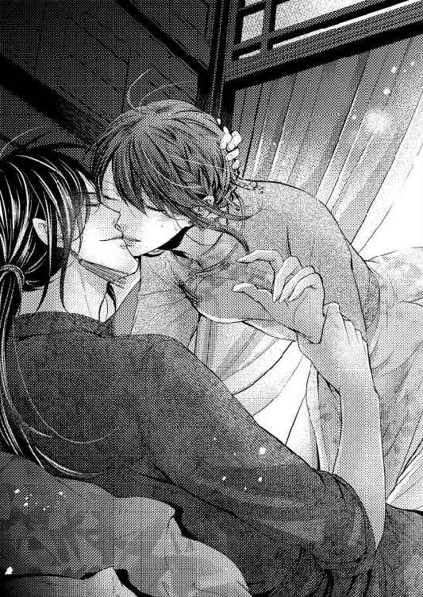
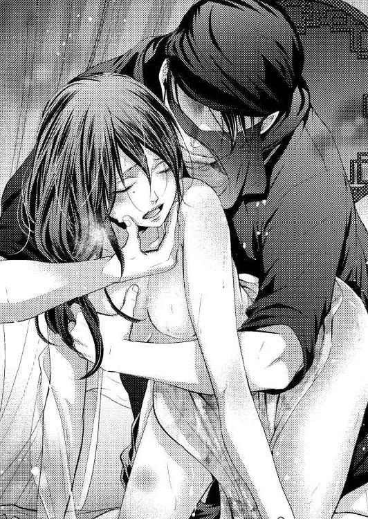
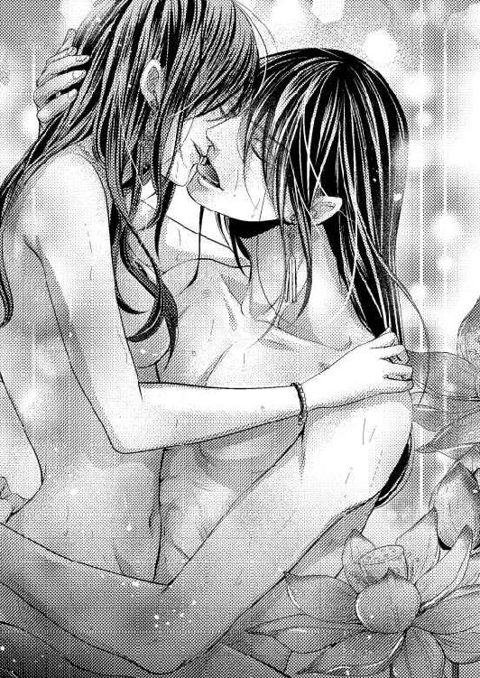

| 鈴の舞姫 ～傲慢皇太子の寵愛に溺れて～ (LUNA文庫) | |
| 月森 あいら | |
| 天海社／LUNA文庫 (2017) | |
鈴の舞姫
～傲慢皇太子の寵愛に溺れて～
[著者]月森あいら
[イラスト]咲
序章
しゃらん、と華やかな鈴の音がする。
それを合図に鈴蓮は、床を蹴った。彼女の体を覆うひらひらとした衣装が舞い、その端に縫いつけられた鈴が音を立てる。それは奏でられる音楽と同じ律動で、見る者を圧倒する。鈴蓮の舞いから、目を離せる者はないだろう。
髪をなびかせ、腕をまわし、腰をたゆませ、また床を蹴り、鈴連は踊る。音楽の終わりに領巾を空に躍らせて、ちりん、ちりんと鈴を鳴らした。そして長い髪が揺れ、垂れるのも踊りのうちと、床に跪き頭を下げると、拍手が鳴った。
「素晴らしい！」
「さすが、陛下の舞姫ですな」
「まことにいいものを、見せていただいた！」
拍手とともに、耳が痛くなるような歓声があがる。鈴蓮がちらりと視線をあげると、玉座に座った皇帝が、満足そうにうなずいていた。
「鈴蓮、こちらへ。褒美を取らそう」
「ありがたき......」
鈴蓮はそう呟いて、改めて頭を下げる。鈴蓮の前には高坏に載せた絹の反物が置かれ、それを鈴蓮は視線を落としたまま受け取った。
「ありがたき幸せに存じます」
「うむ、わしもおまえのような舞姫を抱えて、幸せじゃ」
鈴蓮は黙って、礼を執る。侍女たちがやってきて鈴蓮の手を取り、それに従って彼女は皇帝の前を辞した。
鈴蓮には私室が与えられている。侍女たちを従えてそこに戻る鈴蓮は、音曲館の宮女たちが遠目に鈴蓮を見ながら、ひそひそと話し交わしているのが見える。
「まぁ、いやですわ」
侍女のひとりが、呟くように言った。
「鈴蓮さまを、嫉んでいるのですわ。鈴蓮さまが陛下のお気に入りで、ほかの舞姫を差し置いてお呼び立てになるものですから」
「いいの、言いたい者には言わせておけば」
薄く笑みを浮かべて、鈴蓮は言った。
「わたしは、陛下のために踊るだけだわ。それ以外のことなんて、望んでいないの」
「まぁ、ご立派なお心がけでいらっしゃること」
侍女は感心したように言った。彼女ににっこりと微笑みかけ、ついで鈴蓮の噂をしていたとおぼしき宮女たちにも笑いかけた。彼女たちは、驚いた顔をしている。
鈴蓮が音曲館の近くの自室に戻ると、部屋で待っていた侍女たちに化粧を落とされ着替えを手伝われる。窓際の倚子に腰を下ろしたときには、目の前には美味しそうな干菓子と湯気を立てる茶が用意されていた。
「鈴蓮さま、お疲れさまでございました」
「ええ、ありがとう」
茶を啜ると、皇帝の前で踊るという緊張が解きほぐされるような気がする。鈴蓮は、はぁとため息をついた。
「お疲れでございますか？」
「ええ、間違っても陛下に恥はかかせられないもの」
それはそうですわね、と侍女は考え深げな顔をした。
「今日は、外国からのお客さまをお迎えする儀。鈴蓮さまの舞いも、おもてなしのひとつであったのですもの」
「やめてちょうだい、今さらながらに緊張してくるわ」
「申し訳ございません」
鈴蓮が皇宮にあがってから、一番親しくしている侍女の美明は、くすくすと笑った。
「本当は、緊張などしておいででなかったくせに。鈴蓮さまにとって、陛下の前での舞いなど、朝飯前でいらっしゃるのでは？」
「そのようなことは、ないわ」
どこかぎこちない口調で、鈴蓮は言った。
「わたしだって、緊張するもの......わたしを、からくり人形かなにかと思っているの？」
「失礼いたしました」
美明は頭を下げ、そしてふたりして、またくすくすと笑う。
「だから芸の向上のためにも、音曲館の人たちとも仲よくしておきたいの。噂されるのは仕方ないけれど......関係がぎくしゃくしてしまうのはよくないわ」
「ご立派なお心がけでございます」
美明は、丁寧に頭を下げた。そんな彼女を見ながら、鈴蓮はため息をつく。
（早く......）
胸の奥に響く声に、鈴蓮は耳を澄ませる。
（早く、俺の仇を討ってくれ）
（兄さま）
（早く、あの男を殺して......！）
兄さま、と胸の中で、鈴蓮は繰り返した。それを美明に気づかれないように、そっと胸の上に手を置きながら鈴蓮は茶を啜った。
第一章
鈴蓮が、皇帝の舞姫として特別な境遇にあるのは、なにも鈴蓮が望んだことではなかった。
年明け、祝賀の行事の続く中、警備が疎かになっている隙を狙って、ただひとつの目的を胸に皇宮に忍び込んだ。
しかし目的を達成しないうちにつかまり、皇帝に差し出された。生まれ持っての美貌、そして見せた舞いの腕を皇帝は気に入った。「皇帝の舞姫になりたくて、お側に侍ろうとした」という言い訳を皇帝は信じ、鈴蓮に部屋を与え、特別な宮女として扱っている。
そのことが、音曲館の宮女たちの反感を買っているのだ。それはわかっているけれど、鈴蓮の目的は舞姫として成功することではない。
鈴蓮の、ただひとつの目的。それは去年の冬、おこなわれた処刑にさかのぼる。
（兄さま......）
胸を押さえた鈴蓮は、つい胸飾りをくしゃっと掴んでしまい、美明に「どうなさったのですか？」と見咎められてしまう。
「なんでもないわ」
できるだけ穏やかな口調でそう言ったけれど、美明は誤魔化されてくれただろうか。賢明な彼女だから、突っ込んで尋ねることはしないだろう。
しかし鈴蓮の胸のうちにあることを読まれてしまうのではないか、本当は目的に気づいているのではないか。そんな疑念を抱いているため、近しい関係である美明にさえも心を許すことのできない鈴蓮だった。
美明が、息を切らして鈴蓮のもとにやってくる。私室で爪を磨いていた鈴蓮は、なにごとかと彼女のほうを見やった。
「どうしたの、美明」
「大変でございます！」
「なにが？」
息せき切った美明は、しばらくはぁはぁと荒い息をしていた。そして鈴蓮をじっと見て、言う。
「旺芳さまが、お呼びでございます」
「旺芳さま......？」
鈴蓮は首を傾げた。一瞬、誰のことだっただろうと思ったのだ。
「ああ、陛下の皇子さまじゃないの。確か、皇太子さまで......武官のかただわ」
鈴蓮は呑気にそう言ったけれど、呑気にしている場合ではないということに気づく。
「その、旺芳さまが......わたしに、なんのご用なの」
「鈴蓮さまに御前に侍って、舞いを見せよと仰せです」
「まぁ、そのようなことできないわ」
けらけらと、鈴蓮は笑った。
「わたしは、陛下の舞姫ですもの。陛下のお許しなしに、ほかのかたに侍ることなどできないわ」
「それが、陛下のお許しがあるというのです」
美明の言葉に、鈴蓮は目を見開いた。
「せいぜい、無理やり約束を取りつけたといったところでしょうけれど......皇帝のお許しで、旺芳さまの前で舞いを披露するようにと」
「......陛下のお許しがあるのなら、仕方がないわ」
鈴蓮が脇にちらりと目をやると、身なりからして明らかに身分の高い宮女がいつの間にか控えている。鈴蓮を迎えに来た、旺芳の侍女に違いない。
「着替えてまいりますので、少々お待ちくださいませ」
丁寧に鈴蓮は言って、控え室に下がる。皇帝の前で舞うときよりも一段低い、金春色の衣装をまとい、化粧を施す。かなり待たせてしまったと思ったのだけれど、宮女は先ほどと同じ体勢で待っていた。
「お待たせいたしました」
「殿下は、首を長くしてお待ちです。さ、早く」
音曲館の脇を抜けて、回廊を行く。歩いて、角を曲がって、歩いて、また角を曲がると皇族の住む区間に入り、そこに入ると警備兵の姿もずっと多くなる。
いつもはそのまままっすぐ行くのだけれど、宮女は右に曲がった。そちらに用があったことは今までなかったけれど、皇帝の第一皇子が住んでいるのだということがわかった。
（旺芳は、武官だということだけれど）
そのせいか、どこか無骨な内装だ。鈴蓮も美明も、きょろきょろとまわりを見まわしながら宮女に案内されていく。
籐でできた扉をくぐると、広い部屋に出た。その上座に置いてある倚子に座っているのが旺芳皇子だろう。藍色の長袍をまとって、寛いだ様子だ。
「舞姫の、鈴蓮か」
「は、い......」
鈴蓮は膝をついて、深々と頭を下げた。衣装についた鈴が、ちらちらと音を立てる。
「父上の専属だという話だがな、ぜひその舞いを見たくて、呼び立てた」
「わたしの舞いをごらんになりたいのなら、陛下に同席なさればよろしかったのに」
鈴蓮が言うと、そのような反論を受けるとは思わなかったのだろう。旺芳は驚いた顔をして、鈴蓮を見た。
「生意気な女だ」
鈴蓮は黙って、目を伏せた。その場に、少しの沈黙が流れる。
「まぁ、いい。舞いを見せろ」
「畏れ多くございます」
鈴蓮は立ちあがった。楽隊がいないので、自らの衣についた鈴をしゃらしゃらと鳴らして、舞いの始まりを告げる。袖を揺らして腰を捻り、床を蹴って領巾を大きくたなびかせた。
「ほぅ......」
はじまった鈴蓮の舞いに、旺芳は感嘆の声をあげた。その声をあげさせられれば充分、自分の虜にするのは簡単だ。
鈴蓮の舞いは、楽団がなくともその体全体で音楽を奏でているようだった。旺芳はそれにのめり込んでいるようだ。鈴蓮はますます大きく袖を振り足を踏み鳴らし、体全体で音楽を奏でる。それがすなわち、鈴蓮の舞いだ。
一刻ほども舞っただろうか。鈴蓮は床をぱしんと蹴り、そのまま旺芳の前に跪いた。
「終わりか」
旺芳は、残念そうにそう言った。鈴蓮は顔を伏せたまま、返事をしない。それに焦れたように旺芳は足を踏み鳴らしたが、やがて言った。
「見事な舞いであった。褒美を取らそう」
「ありがたき幸せに存じます」
「褒美など、父上からいくらでも受け取っているだろうがな」
そう言って旺芳は、自らの首もとに触れた。勢いよくなにかを引きちぎり、鈴蓮のもとに投げてくる。
「きゃっ」
とっさのことで、受け止めるのが精いっぱいだった。鈴蓮の手の中には青く光る宝石を嵌め込んだ首飾りがあって、鈴蓮は、はっと旺芳を見た。
「これほど、素晴らしいものを......！」
「おまえの舞いは、それに値するほどのものだったということだ」
なんでもないことのように旺芳は言って、そして倚子に座り直す。
「もう終わりか？ なら、行け」
「お目汚し、失礼いたしました」
鈴蓮はそう言うと、旺芳の前を辞した。しかし淡泊なもの言いで鈴蓮に「行け」と言った旺芳が、鈴蓮をただの舞姫以上の目で見ていることには気がついていた。
「わたし、もうすぐしたら旺芳さまの寝所に呼ばれるわ」
「まぁ......」
部屋に戻ってそう言うと、美明が驚いた顔をして鈴蓮を見た。
「それで、いいのですか？」
「どういう意味？」
「陛下を差し置いて、旺芳さまのもとに侍るなんて」
「別にわたしは、陛下のものではないわ」
美明に手伝わせて着替えながら、鈴蓮は顎を反らせた。
「陛下のために踊るけれど、陛下のためだけでなくてはいけないというわけではない......。わたしは、この皇宮にあって自由なのだわ」
「もちろん、鈴蓮さまほどに舞えたなら、自由を手にすることなど簡単でしょうけれど」
どこか羨むように、美明は言った。
「その自由が......殿下の寝所に侍ること、など」
「私は好きで、旺芳さまのもとに侍るのだわ」
くすっと笑いながら、鈴蓮は言った。
「だって、素敵な美丈夫だと思わない？ 武官ですってよ......ご職業にも不足はないし、なんといっても皇太子だわ。相手として不足なし、というところね」
「まぁ......鈴蓮さま」
鈴蓮の言うことを不遜だと思ったのだろうか、美明はおろおろと彼女の口を塞ごうとする。しかし鈴蓮は笑うばかりで、ゆったりした服に着替えると柔らかい倚子に腰を下ろした。
「そのようなことで、よろしいのですか？」
美明が、懸念するように尋ねてきた。
「なにが？」
「その......旺芳さまの寝所に侍る、などと」
「もちろん、いいに決まっているわ。どうしてそんなこと、訊くの？」
「鈴蓮さまが、あまり喜んでおられないように見受けられましたもので」
「......そんなこと、ないわよ」
美明は、ずいぶんと勘の鋭い女だと思う。
鈴蓮が旺芳の私室に呼ばれたのは、それから一週間後のことだった。
「旺芳さまが、自室で鈴蓮さまの舞いを見たいと仰せです」
やってきた侍女は、丁寧にそう言った。しかし彼の宮ではなく、さらにその奥の私室で、という意味を、その場の誰もが理解しないわけがなかった。
「かしこまりました」
鈴蓮は冷静に返事をし、美明とほかの侍女たちに手伝わせて化粧をし、衣装をまとう。静々と出ていった鈴蓮を旺芳の侍女は驚いた顔で見たけれど、それほどに気合いが入っていただろうか。
旺芳の私室は、薄暗く冷たいところだった。内装も簡略で屏風の一枚も飾っておらず、このようなところで一日の疲れを癒やすことができるのか、と思ってしまったくらいだ。
「来たな、鈴蓮」
その奥で、倚子に腰掛けた旺芳が言った。どのような場所だろうと、務めは果たすつもりでいる。鈴蓮は跪き、深々と旺芳に頭を下げた。
「お呼びいただきまして、感謝しております」
「感謝されるような筋合いはない」
部屋の内装同様、冷たく旺芳は言い放った。そのもの言いに鈴蓮は少し震えたけれど、そんな心のうちは表に出さず、ただ頭をあげるようにと言われるのを待っていた。
「舞いを見せろ」
「かしこまりましてございます」
今日も、鈴蓮の伴奏は鈴の音だ。赤い袖の先についた鈴を、しゃらりと鳴らす。音が響き渡り、それは鈴蓮の体に沁み込んでくる。
鈴蓮は、床を蹴った。腕で大きく円を描く。すると鈴がちりちりと鳴り、鈴蓮の舞いを彩る。その音に合わせて、体を揺らす。腰を捻る。体全体を使って、舞いの題材である「春の喜び」を表現する。
この題材を選んだのは、旺芳の部屋があまりにも冷たいからだ。屋外は春の息吹に満ちているのに、この部屋はまるで冬のように冷たい。そこにひと筋でも、春の光を射し込ませようと思ったのだ。
鈴蓮の沓靴の先にも、鈴がついている。とん、と床を蹴る音に混ざって鈴が鳴り、それもまた鈴蓮の舞いの後押しをしてくれる。
そうやって、どのくらいの時間舞っただろうか。旺芳の視線は食いつくように鈴蓮に注がれていて、それを確かめるように、いくつもの舞いを披露した。いずれも春の訪れを喜ぶ舞いばかりで、それに旺芳は気づいただろうか。
「はっ......！」
たんっ、と鈴蓮の沓靴が床を叩き、そして彼女は動きを止めると、床に跪いて礼を執った。部屋はしんと静まりかえり、そこに面倒そうな旺芳の拍手が響いた。
「変わらず、見事な舞いだ」
「畏れ多くございます」
低い声で、鈴蓮は答えた。旺芳が立ちあがる。
「来い、鈴蓮」
来た、と鈴蓮は思った。奥の閨に呼ばれるのだ。まだ表は明るい時間だけれど、薄暗く冷たい旺芳の居室では、時間など関係ないのだと思った。
「はい」
静かに返事をして、鈴蓮は立ちあがる。一歩踏み出すと旺芳の侍女が手を差し伸べ、それに手を取られて案内されて、鈴蓮は奥の部屋へと足を踏み入れた。
「まぁ......」
寝室は、青で彩られていた。壁に描かれた昇竜も、その前に置かれた花瓶も、生けられた花も、天井画も、臥台の枠も布団もなにもかもが静謐な青で、その雰囲気に鈴蓮は圧倒された。
「青が、お好きなんですの？」
「嫌いではないな」
冷淡に旺芳は言ったけれど、鈴蓮がじっと彼の顔を見るとにやりと笑った。はじめて見る旺芳の笑顔は奇妙に胸に響いて、鈴蓮はどきりとした。
「あちらのお部屋は、簡素にしていらしたのに」
「別に、区別しているつもりはない。ただ......こちらは、私の眠る部屋だ」
臥台の端に、旺芳は座った。ぎしっと臥台が音を立てる。
「より、好きなもので埋めたいと......思うのは、欲深いことか？」
「そうではありません」
少し驚いて、鈴蓮は言った。
「欲深いなんて、そんな。あたりまえのことではありませんか」
「そうか」
言って旺芳は、鈴蓮を手招いた。呼ばれて、近づく。すると手首を掴まれて、あ、と言う間もなく引っ張られて押し倒された。
「きゃ......」
「おぼこのような声をあげるのではない」
戒めるように、旺芳は言った。
「はじめてではないのだろう？ おまえは、父上のお気に入りだ。何度、父上と寝た？」
「い、ちども......」
それは本当のことだった。皇帝は寵姫と舞姫の身分の違いを理解しない男ではなかった。鈴蓮には、ただ舞姫としての務めを求め、それ以上を要求されることはなかったのだ。
「嘘をつけ。音曲館に入れず、私室を与えている舞姫だぞ？ 父上の手がついていないわけがあるまい」
「本当の、ことです......」
必死に言葉を綴る鈴蓮の唇は、旺芳のそれに塞がれた。驚いて目を見開いてしまう。息ができないほどに激しいくちづけだ。それはどこまでも冷淡な彼の、うちに秘めた情熱を示しているようで。鈴蓮は何度も、ぞくぞくと震えた。
「んぁ、あ......ああ、あ......」
肩を強く臥台に押しつけられて、身動きができない。呼気を奪われ体の自由を押しとどめられて、鈴蓮は目の前が真っ白になった。舌が入り込んでくる。ぺちゃりと前歯を舐められて、自然にそれが開き、舌が口腔を陵辱した。
「っあ、あ、あ......ああ」
頬の裏を舐められて、ぞくぞくとする。鈴蓮が大きく身震いすると、旺芳は侮るように笑った。
「まるで、はじめてのような反応を」
「本当、に......はじめて......」
自由にならない呼吸の中、胸を喘がせながら鈴蓮は言った。
「はじめて......なのです。殿下が......わたしの」
「真実か」
いまだに信用していないような旺芳ではあったが、くちづけをほどいてじっと鈴蓮を見る。暗い部屋の中、その瞳がどのような表情をしているのかはわからなかったけれど、ただじっと鈴蓮に注がれているのはわかる。鈴蓮は何度も、まばたきをした。
「それはそれは......思わぬ掘り出しものだな」
喜ぶように、旺芳は言った。
「まさか、父上の舞姫が処女だとは思わなかった。そのようなことがあるとは......」
旺芳は、鈴蓮の胸に手をすべらせた。とっさに鈴蓮は、精いっぱいの力でそれに逆らう。
（好機！）
鈴蓮は旺芳の手をはたき落とし、自らの胸もとに手を突き込んだ。しゅる、と領巾があたりに舞う。そこに金属の煌めきがあったことに、旺芳は気がついただろうか。
「なにを......」
「旺芳皇子！」
鈴蓮は、鍛えた体で臥台の上を跳ねた。両手で構えているのは、なんの飾りもない、しかし鋭い短刀だ。
「尹洵炎を、覚えているだろう！」
「尹......？」
旺芳ははっきりと眉をしかめた。とっさには思い出せないといった表情に、鈴蓮の憎しみはゆらりと大きな炎をあげる。
「その、尹がどうした」
「わたしの兄だ！」
鈴蓮は叫んだ。まさにこの憎しみを胸に、鈴蓮は今までを生きてきたのだ。
「おまえに殺された、わたしの兄だ！ おまえは軍庫を暴いたという罪を兄に着せ、処刑した......が、本当はおまえが策を弄して兄を殺したこと、わたしは知っている！」
「軍庫か。ああ......あの男か」
ようやく旺芳は思い出したようだった。旺芳の中では、その程度の認識しかないのか。鈴蓮はぎりぎりと唇を噛んだ。
「あれは、あの男の策だ。むしろ私は、嵌められたのだ」
「嘘を言うな！」
短刀を構え直し、鈴蓮は叫んだ。
「兄が、あのような罪を犯すはずはない！ すべては......おまえの策略だ！」
そのまま臥台を蹴って、旺芳の胸に短刀を突き刺そうとする。旺芳は手を伸ばしたけれど、舞いによってばねのように鍛えられた鈴蓮の体だ。彼の手は届かず、鈴蓮は目的の箇所に素早く手を伸ばした。
「つ、う、っ！」
しかし短刀は、かきん、という音とともに跳ね返された。鈴蓮は瞠目する。旺芳はにやりとした笑みとともに、破れた長袍の胸もとを開く。そこには金属の胸当てがあって、短刀などでは傷もつけられない丈夫な代物だった。
「私が、ただ欲望ばかりでおまえをここに招いたと思うか？」
そういえば、衛兵のひとりもやってこない。鈴蓮の計画は、最初から見抜かれていたというのか。
「おまえが尹洵炎の妹であることはわかっていた。父上も知っていて、おまえを泳がせておいたのだ」
「......っ！」
鈴蓮は大きく息を呑む。旺芳は鈴蓮の手首を掴み、その手からかちゃんと短刀が落ちる。かん、かん、かん、と音を立てて、短刀は床をすべっていった。
「そこまで、私を愚かだと思っていたとは......私も侮られたものだ」
そう言って旺芳は、鈴蓮にくちづける。このたびは優しい愛撫などなく、自ら噛んだ痕を、彼の歯によって切り裂かれた。
「皇太子に対する、暗殺未遂」
口の端から血を流す鈴蓮を見やって、旺芳は唇の端を持ちあげて笑う。
「その罪は、重い。おまえの命などでは、あがなえぬくらいにな」
そして旺芳は、声をあげて笑った。楽しげな笑い声が響く中、鈴蓮は大きく目を見開いて、彼を見ていた。
尹鈴蓮は、皇太子の暗殺未遂で処刑されることになった。
舞姫としての鈴蓮しか知らなかった者――ほとんどの者がそうだったのだが――は、鈴蓮のもうひとつの顔に驚いたらしい。そして鈴蓮は、舞姫の衣装を奪われ粗末な長衣をまとわされて、地下牢につながれている。
旺芳の寝室で囚われてのち、水も与えられていない。結いあげていた髪はなすがままにほどけて、まるで幽鬼のように見えることだろう。
もっとも、そんな鈴蓮の姿を見るのは、ときおり見まわりにやってくる牢番以外になかったのだけれど。
（もう......何日経ったのかしら）
牢の中で、鈴蓮は思う。もう何日も経ったようにも思えるし、まだ一日も経っていないようにも感じられる。
（いずれにせよ、わたしは殺される）
旺芳の暗殺に失敗した以上、命を奪われるのは覚悟のうえだ。その前に、酷い拷問にかけられることだろう。早く殺してくれと願ってしまうような――。
（そのような、情けない姿を見せたくはない）
誇りある尹家の女として、泣きわめく姿など見せたくはない。しかしどれほど酷い拷問にかけられるのか、その間平静を保っていられる自信などない。
（ならば、いっそ）
鈴蓮は、顔をあげた。頭上には小さな明かり取りの窓がある。そこにはしっかりとした柵があって、鈴蓮の体重など易々と支えてくれそうだ。
微かにうなずくと、鈴蓮は立ちあがる。後ろ手に自分を縛っている縄を、何度も手首を捻ってほどいた。いくら鈴蓮の関節が柔らかかったとしても、これほど簡単にほどけるのは、ともすれば自害せよという旺芳の恩情なのかもしれなかった。
鈴蓮は、縄の端に結び目を作ると、窓に向かって放り投げる。何度か投げて柵に渡し、縄を輪にするとしっかりと結んだ。
あとは、この端に首を引っかけるだけだ。鈴蓮はごくりと生唾を呑み、窓を見あげた。微かに見える青が、見納めの空の色だ。
まさに、鈴蓮が縄に首をかけようとしたとき。ばたばたと足音が聞こえてきた。鈴蓮は、はっとそちらを見る。
「待て、尹鈴蓮！」
「なにを......」
鈴蓮は驚いた。まるで見ていたかのように牢番たちが、衛兵たちが、そして旺芳が現れたのだ。
「自ら縊れて死ぬも、悪くはないが」
旺芳は、にやりとした笑みとともに、そう言った。
「首吊りの死体は、醜いぞ？ 父上も、寵愛した舞姫の、醜い姿はお望みになるまい」
「そのようなこと......！」
鈴蓮は声をあげる。牢番に命じて牢を開けさせ、彼は中に入ってきた。
「なにを......わたしを、嘲笑いに来たの!?」
「それも悪くない」
旺芳は笑った。鈴蓮の顎に手を置いて、くいと上を向かせる。
「おまえのようなうつくしい女がこのような恰好をしている......それもまた、悪くない」
「悪趣味だわ」
吐き捨てるように鈴蓮が言うと、旺芳はさも楽しげに、くつくつと笑った。
「そうだな、悪趣味かもしれんな。なにしろ」
そう言って、旺芳は鈴蓮にくちづける。
「罪人を、牢から出そうというのだからな」
「な、にを......！」
彼の言葉の意味が、わからなかった。なおもくちづけを受けながら、鈴蓮は何度もまばたきをする。ぼやけてしまうほどの近さで、旺芳の瞳がゆらりと揺れる。
「そうだ、私はおまえの身柄を預かった。おまえの処遇は、以降私に委ねられる」
「どういう、こと......？」
「わからぬのか」
苛立ったように、旺芳は言った。
「おまえの命を救ってやると言っているのだ。おまえは死なぬ。処刑されることはない」
「なぜ」
きっと目をつりあげて、鈴蓮は声をあげた。
「なぜ、わたしを助けるの。あなたの命を狙ったのに？」
「助けているわけではない」
ふん、と嘲笑を込めた視線を向けながら、旺芳は言う。
「死ぬより辛いことがあると、知らぬのか？」
「......っ！」
鈴蓮は目を見開いた。そんな彼女を抱き寄せて、旺芳はその耳もとにささやく。
「おまえを、死ぬよりも辛い目に遭わせてやる」
びくり、と彼の腕の中で、鈴蓮は震えた。
「ここで首を吊って......否、拷問を受けて死んだほうがよかったと思うような目にな。それともおまえは、馴染んで悦んで......もっととねだるやもしれぬがな」
「いったい......どういう」
旺芳の意図がわからない。鈴蓮は大きく震えて、ただ旺芳を見つめていた。
第二章
鈴蓮は、充分な食事を与えられた。
入浴もさせられ、隅々までを磨きあげられた。感覚の鈍っていた牢の中では気づかなかったけれど、思いのほか長い時間が経っていたらしかった。
髪を結いあげられ、化粧をされ、うつくしい衣を着せられる。まるで姫君のような装いは、舞姫だったころには許されなかったものだ。
それこそ本当に、姫君であるかのように鈴蓮は侍女に手を取られ、静々と案内をされる。しかしここは旺芳の宮であり、連れていかれるのはあの、青で彩られた旺芳の寝室なのだった。
「旺芳さま、鈴蓮さまをお連れいたしました」
（......さま？）
そのように呼ばれて、鈴蓮は戸惑った。さまづけなど、身分あるものでもあるまいし――。そのような扱いをされることは、自分が旺芳の所有物であることを思い知らされて、鈴蓮の気持ちはますます落ち込んだ。
「入れ」
不機嫌そうな、旺芳の声が聞こえる。鈴蓮はひとつ身震いをして、そしてしゃんと背筋を伸ばしてから、寝室の中に入った。
「今日は、短刀を忍ばせていたりしないだろうな？」
「浴室から、ずっと誰かが一緒だったんですもの。そのような余裕があるはずはないわ」
生意気な口を利く鈴蓮に、侍女が慌てた様子を見せる。しかし旺芳はにやりと笑い、侍女を下がらせた。部屋にはふたりきりになる。
「まぁ、おまえがどのような企みを持っていたとしても、私は折れはしないがな」
「また、胸当てをつけているというの？」
「女人と閨をともにするというのに、そのような無粋なものはつけていないよ」
ぞくり、と悪寒が体中を走る。しかしそれを見破られないように鈴蓮は息を呑み、そんな彼女の手を、旺芳は引いた。
「あ、っ」
青で彩られた臥台に、引き込まれる。鈴蓮は旺芳の体の上にのしかかる恰好になり、後頭部に手を置かれると、ぐいと引き寄せられた。

「ん、ぁ......ぁ、あ......！」
くちづけられる。最初は重ねるだけ、しかしすぐに舌が入ってきて、荒々しくかきまわされた。
「っあ、あ......あ......！」
口腔を厚い舌でなぞられて、ぞくぞくと背が大きく震える。舌をからめとられ、じゅく、と吸われた。それにまた体がわななき、予期しなかった刺激に鈴蓮は目を見開いた。
「甘いな」
鈴蓮の頭を、強い力で押さえながら旺芳は言った。
「麗しい女は、どこも甘いものか？ おまえ自身の蜜も......味わわせろ」
「い、ぁ......あ、あ......？」
自身の蜜、と言われた、その意味がわからない。鈴蓮が声を震わせると、旺芳は笑った。
「わからぬか？ ならば、わからせてやろう......」
「あ、っ！」
体を返された。鈴蓮の衣は、肩からしゅるりと引き下ろされる。いきなり乳房を晒すことになって、鈴蓮は慌てた。
「いやっ......こんな、の......！」
「いや、ではない」
旺芳は、大きな手で鈴蓮の乳房を掴んだ。力を込められて、鈴蓮は呻く。
「思いのほか、大きな乳房だな......？ おまえは自分の魅力を、うちに隠していたと見える」
「かく、して......なんか」
たまらない羞恥に、鈴蓮は身を震わせる。そんな彼女の反応を愉しむように、旺芳は指の間に乳首を挟み、それを捏ねながら乳房を愛撫した。
鈴蓮は、今まで知らなかった感覚に声をあげるばかりだ。しかし、この感覚をなんと名づけていいものかわからない――悪寒なのか、快感なのか。そんな彼女の耳に、旺芳がささやきかけた。
「これを、快楽というのだ......鈴蓮」
「ひ、っ......っ......！」
「身を委ねろ。感じるままに、声をあげろ」
「んや、ぁ......っ......！」
旺芳の唇が、乳首の先に触れる。くわえて吸い上げられ、すると体の芯からの感覚が迫りあがった。
鈴蓮の声が、弾ける。なにか大きなものが体を貫いたような気がして、鈴蓮は全身でわなないた。しかしその感覚に身を委ねている間もなく、立て続けに乳首を吸われ、乳房を揉まれる。鈴蓮は身を震って、嫌悪を示した。
「いや......こん、なの......いや......」
「しかしおまえは、感じている」
嘲笑う旺芳の声が、憎らしい。
「ここはどうだ......？ ここも、疼いてきているのではないのか？」
彼は膝で、鈴蓮の両脚の間を蹴りあげた。軽く与えられた刺激だったのに、それはたまらなく鈴蓮を感じさせて、思わず甘い声が洩れた。
「ああ......あ、あ、あ......っ......」
「こちらも濡れているな。くちゅくちゅと、音がしている」
「そ、んな......わけ」
ない、と抵抗したかった。しかし脚の谷間への刺激に酷く感じてしまったのは確かで、その正体がわからなくて鈴蓮は戸惑った。
「おまえの体の、どこが感じるのか教えろ」
そのようなことを言われても、わからない――鈴蓮は身悶えし、そんな彼女の体から、旺芳は衣を引き剥いでしまう。
「あ、あ......っ......！」
「ここは？ ここは、どうだ？」
彼のくちづけが、みぞおちにすべる。脇腹を這って腹部に至った。剥き出しの肌のどこに触れられても感じてしまい、鈴蓮は声をあげる。そんな彼女を、旺芳は笑う。
「どこでも感じるのだな......これでは、どこを愛撫していいのかわからないではないか」
「い、ぁ......だ、って......」
身を捻って逃げようとしても、体に力が入らない。鈴蓮は力なく掛布を引っ掻いたが、そのようなことは抵抗にすらならなかった。
「それとも......ここか？」
旺芳の手は、鈴蓮の右腿を持ちあげた。ぱくりと秘所が開き、冷たい空気が入ってくる。その感覚に鈴蓮は身を捩らせ、そんな彼女を笑いながら、旺芳は顔を伏せる。
「やぁ、あ......あああ......っ......！」
「ここは、私を待っているようだな......？」
「いや、違う......違う！」
秘部にくちづけされた。そのような場所に、と体を引き攣らせるものの、旺芳は遠慮もなくそこを吸いあげた。
鈴蓮の声が途切れる。大きく体が反った。とっさに旺芳の肩に手を置き押し退けようとしても力は及ばず、なおもそこをちゅくちゅくと吸われてしまう。
「やめ、や......め、て......っ......」
腰を引き攣らせ、鈴蓮は掠れた声をあげる。それでも彼の愛撫はやまず、なおも吸われて体を走った衝撃に、鈴蓮は大きく目を見開く。
「あ、あ......ああ、あ......っ！」
びりびりと、体が痺れる。指先にまで流れ込むそれに身を震わせ、そして鈴蓮は全身の力が抜けるのがわかった。それ以上刺激を与えられても、答えられない。ひくっ、ひくっ、と下肢を震わせながら、鈴蓮は糸の切れた操り人形のように臥台の上に横たわっていた。
「達したか」
愉しげに、旺芳が言った。
「達する......？」
「絶頂を極めたということだよ。おまえはもう、処女ではないな」
「そ、んな......！」
鈴蓮は思わず泣きそうになった。目がじわりと潤むのがわかる。そんな彼女の目もとに、旺芳がくちづけを落とす。
「しかし......本当に処女でなくなるには、もう少し過程が必要だ」
鈴蓮を慰めるような態度を取っておきながら、旺芳はそんな残酷なことを言った。再びまだ力の入らない脚を拡げさせて、なにか熱いものを押しつけてきた。
「きゃ......！」
「かわいらしい女陰だ」
くすくすと笑いながら、旺芳が体を進めてくる。丸い秘所に、なにかが突き刺さる。裂け目に、熱いものが突き立てられた。
「毛もほとんど生えていないのだな......まるで、子どもを犯すようだが」
「いや......や、め......これ以上......」
「いいや、やめない」
残酷なことを彼は言って、ずんと体を押しつけてきた。体に衝撃が走る。まるで強烈な痛みのようだったけれど、確かな痛みは感じなかった。
「あ、あ......あ、あ......あ」
ただ、重い、と思った。未開発の処女地に重いものをくわえさせられる感覚。それはどんどん奥を擦っていく。敏感な内壁を感じさせられて鈴蓮は喘ぎ、掴んだ旺芳の肩に力を込めた。
「痛いだろうが」
なおも笑いながら、旺芳は言うのだ。
「おまえは、痛くなかったかもしれないけどな......女の爪は、存外鋭い」
「あ、ごめんな、さ......」
とっさに謝りかけて、自分の体を好きにするこの男に謝る必要などないと思う。きっと睨みつけると、目の前の旺芳の瞳が笑いを湛えた。
「おまえは本当は、素直な女なのだな」
なにを、と鈴蓮は色めき立ったけれど、旺芳に腰を進められて言葉に詰まってしまう。
「そのように、気を張ってはいるが......私の前では、素直であれ」
「す、なお......なんて」
兄の死に対する復讐を誓ったときから、そのようなことは忘れてしまった。女らしくあろうなどという気持ちは捨ててしまった。舞姫としてうつくしくあろうとしても、女である意識などなくしてしまっていた。それを、このような形で自覚させられるなんて。
「はぁ、あ......ああ、あ......っ......！」
ずく、ずく、と奥を突かれる。内壁はどこを突かれても違う感覚があって、そのたびに鈴蓮は声をあげてしまう。そんな彼女を愉しむような表情を浮かべながら旺芳は体を進め、ずん、と深い場所を突きあげた。
「あ、あ、あ......あ、あ......」
「おまえの、子壺の口が感じられる」
にやり、と笑う旺芳のこめかみから、ひと筋汗がしたたり落ちた。
「私の種を待っているな......？ ぱくぱくとうごめいて、心地いい」
「待って、なんか......！」
「ここに熱いものをぶちまけられれば、さぞやおまえは悦ぶことだろう」
突いては引き、引いては突きあげながら、旺芳は言う。
「そのときの顔を、見てみたいものだ......見せてくれるだろう？」
「いや......ああ、いや......！」
先ほど達したときのような、未知の感覚が体の中を駆け巡る。ぞく、ぞく、と全身が震え、目を閉じるとその感覚がより鋭く指先までを駆ける。目を開けると旺芳の顔があって、ぞくりとするほど艶めかしい表情で、鈴蓮を組み敷いている。
「おまえの中は、心地いい」
ため息とともに、旺芳は言った。
「私に、感じさせてくれるだろう？ もっと、もっと......心地いい思いをさせてくれるだろう？」
「なぜ、わたしが......あなたを。いや、いや......！」
しかし、自分の言葉が嘘であることに、鈴蓮は気づいていた。いや、と言いながらも彼の与えてくれる快楽を心待ちにしている。これ以上、どのように感じさせてくれるのか――期待している。
「いや、ではないだろう」
そんな鈴蓮の心を読んだように、男は言う。鈴蓮にくちづけ、唇を吸い、舌を絡める。ぺちゃぺちゃと音を立てながら唇でも下肢でも繋がり、双方に激しい刺激を当てられながら、どんどんと体温があがっていくのを感じている。
「いや、ぁ......もう、やめ......」
しかし彼は、動きを止めなかった。ますます激しく動き、鈴蓮の秘所をぐちゃぐちゃにする。敏感な箇所で感じさせ、身悶えさせ、さらに奥を抉っていく。
「あ、あ、あ......っ......っ！」
「......達くぞ」
旺芳が、低く呟いた。
「おまえの奥を、犯す」
「んぁ、あ............ああ、あ......っ......」
体の奥で、なにかが小さな爆発を起こした。それがなんなのかわからないまま、放たれた灼熱に鈴蓮の体が大きく反る。秘所を吸われたときのように体は震え、あのとき以上の衝撃を受けて声が途切れる。
「あ............ああ、あ......っ......」
「ふっ......鈴蓮」
旺芳も、熱い息をこぼしていた。彼が自分の中で放ったこと、自分の子宮が呑み込まされた子種を悦んで震えていることを感じながら、鈴蓮の意識はだんだんと薄くなる。
「んぁ、あ、あ......っ......」
「鈴蓮」
まるで愛おしむように、名を呼ばれた。それは煩わしいことであるはずなのに、奇妙に甘く鈴蓮の胸に響いた。
（あなたは......誰）
遠くなっていく意識の中、鈴蓮は考えた。
（わたしを、こんなふうにしてしまうの。あなたはいったい、誰なの......？）
その答えを得られないまま、鈴蓮の脳裏は真っ白に塗り潰される。
＊
あ、あ、と途切れ途切れに、鈴蓮の声が寝室に響く。
鈴蓮はなにもまとっていなかった。裸のまま、やはりなにもまとっていない旺芳の下肢を跨いでいる。ふたりの体はしっかりと繋がっていて、突きあげられる鈴蓮の体は頼りなく揺れていた。
「んぁ、ああ......ああ、あ......っ」
ずん、ずんと突きあげられて鈴蓮の体は震える。咽喉を反らせて喘ぐ声は途切れ途切れに部屋に響き、それに旺芳が唇の端を持ちあげた。
「もっと、声をあげろ」
旺芳の命令に鈴蓮は彼を睨みつけたものの、しかし視線には力が入らなかった。揺れる乳房を、大きな手で掴まれる。ぎゅっと力を込められて喘ぎ、すると同調するように、彼を受け入れた秘所が大きく震えた。
「ここをいじると、おまえは反応するのだな」
「いや......ちが......っ」
体をわななかせながら、鈴蓮は声を立てる。そんな彼女の声をもっと招こうというように彼は下肢を使い、鈴蓮は男の思うがままに声をあげさせられてしまう。
「あ、あ......ああ、あ、あ......っ」
「おまえの中は、変わらず......心地いいな」
ずく、と突き立てながら旺芳が呻く。
「私を包み込んでくる......たまらない。おまえのようにいい女に、出会ったことはない......」
「な、にを......ああ、あ......っ......」
鈴蓮はなおも声をあげ、この体勢から逃げようとし、しかし男の手で腰を押さえられてしまう。
「やぁ......ッ......」
また別の場所を突かれる。突きあげられて身を反らせ、彼の腹筋の上に置いた手が震える。そんな彼女の反応を愉しむように男は腰をうごめかせ、ますます女の声を引き出した。
「んぁ、あ......あ、あ......っ」
「ふふ......もっと、喘げ」
どこか悪辣な笑みを浮かべて、旺芳は言う。
「もっと声を聞かせろ......私を、悦ばせろ」
「っん、ん......っ......っ」
彼の思うがままになるつもりはない。鈴蓮は懸命に唇を噛んだけれど、声をこらえることはできなかった。
「んぁ、あ......ああ、あ......っ」
ふたりの繋がった部分が、くちゃくちゃと音を立てる。その淫らさにぞくりと震えたけれど、自らそれを解く方法はない。
「ほら、達くぞ」
「やぁ......っ......」
そう言われて、呑み込まされるのははじめてではない。そのたびに自分の子宮がきゅうと疼き、精液を悦んでいるのがわかるのだ。
「いや、いや......っ」
「ふふふ」
鈴蓮の「いや」が、言葉どおりの意味ではないことを旺芳はすでに知っている。彼は少し笑っただけで、鈴蓮の腰を掴むとさらに突きあげてきた。
「あ、あ、あ......っ......」
子宮の口が、ぱくぱくとうごめく。今にも放たれる淫液を求めて震えている。そんな自分の体の反応ははじめてではないけれど、感じ取るたびに奇妙な罪悪感のような、違う色をした感覚を受け止めてしまう。
「あっ、は、や......」
放出しそうなのに、いつまで経っても精液をくれない旺芳を急かすような声をあげてしまった。とっさに口を噤むけれど、旺芳はにやりと笑って鈴蓮を見あげた。
「早く、とな？」
「ち、がう......っ......」
鈴蓮は喘いで、彼の視線を振りほどこうとする。しかしこの距離で彼の目から逃げられるわけもなく、注がれるまなざしが痛い。
「ちが......ああ、あ、もう......もう」
「私の種が、欲しいのだろう？」
鈴蓮の反応の理由をわかっていて、旺芳は言うのだ。その口から出ると異様なまでに淫らに聞こえる声に、鈴蓮は大きくぶるりと震える。
「欲しいと、言え。その唇で、私が欲しいとな......」
「あ、ほし......ほし、い......」
思わず口を突いて出た声に、鈴蓮は目を見開いた。旺芳はなおも微笑んで鈴蓮を見る。ずく、ずくと下肢を突きあげられて、鈴蓮は大きく身を反らせた。
「......おまえの中に、注いでやる」
どこか縺れた口調で、旺芳が言った。
「私のすべてをな。ありがたいと思え......おまえにすべて、与えてやる」
「んぁ、あ、あ......あ、あ......っ......」
どくん、と体の奥で、大きな衝撃があった。熱い淫液が放たれる。それは鈴蓮の体の奥に注がれて、沁み込んでいく感覚に反射的に声が洩れた。
「悦んでいるな」
満足そうに、旺芳が言った。
「おまえが満たされて、悦んでいるのがわかる......ほら、中が震えている。私の精液を呑み込んで......わなないている」
「いや......いや、ぁ......っ......」
鈴蓮は身を震うけれど、自分の体の反応は自分が一番よくわかっている。体の奥はきゅうきゅうとうごめき、精液を吸ってその感覚を悦んでいる。
「おまえの体は......素直だな」
はっ、と満足したような吐息とともに、旺芳は言う。
「おまえ自身は素直でないが。体は正直に、私を受け入れる」
「いや、ちが......う......」
「いいや、違わないな」
旺芳が下肢を突きあげると、ぐちゃりと淫らな音がした。それに思わず背を震わせて、すると全身から力が抜けた。ぐったりと倒れかける鈴蓮の体を、旺芳がぎゅっと抱きしめる。
「愛おしい、鈴蓮」
思ってもいないことを、彼は言った。
「おまえの反応は、本当に愛おしい......私のために用意された女だな」
「そ、な......こと」
強く抱いてくる腕の中で、鈴蓮は大きく震えた。そんな彼女をさらに抱き、旺芳は腰を揺らしてくる。
「んぁ、あ......ああ、あ、あ、あ！」
「ほら、まだ欲しがっている」
くすくすと、旺芳は笑った。
「まだ、するか？ まだ、私を受け入れるか？」
「もう......もう、いや。もういいの......！」
「嘘つき」
なおも旺芳は笑う。
「中は、こんなに欲しがっているのにな......？ まだ足りないと、疼いているのではないか？」
「そんな、こと......！」
鈴蓮は首を振ったけれど、ぱたぱたと髪の毛が頬を打つのにも感じてしまう。ああ、と思わず声があがり、鈴蓮は旺芳の胸に突っ伏した。
「あ、あ......あ、あ......」
「愛いやつ」
抱きしめられて、背を撫でられた。それにもぞくぞくと感じてしまい、鈴蓮は震える。そんな彼女を、旺芳は続けて撫でる。
「おまえのように愛らしい女は、見たことがないな」
「戯れを......！」
鈴蓮の言葉は、声になっていたかどうかわからなかった。彼の腕の中で鈴蓮は力なく目を瞑り、それでも身の奥がまだ、と疼いているのを感じ取らないわけにはいかなかった。
＊
ふと目が覚めると、あたりはまだ暗かった。
鈴蓮は体を起こす。身の節々が、ぎしりと痛んだ。日々繰り返される荒淫のせいに違いない。
立ちあがった鈴蓮は、なにも身につけていなかった。掛布を一枚取って身にまとい、臥台から下りると、窓際に近づく。そっと見あげると、満月が天に昇っていた。
（こんな、日々）
嫌悪を持って、そう胸の中で呟いた。体の奥は夜な夜な抉られる記憶に、すっかり快楽を覚えてしまったようだ。
（わたしは、溺れたりしない）
腕力では敵わない男に逆らう術はない――しかし心までは明け渡したりしない。自分は兄の復讐のためにここにいるのであり、快楽に溺れるためではない。
（わたしは、復讐のために生きる）
体を覆った掛布を、ぎゅっと握った。しかし、甘く蕩けさせられた記憶も新しい体は、鈴蓮にたまらない疼きを感じさせ、掛布を握る手に力を込める。
（でも......あの男を、溺れさせるためなら）
旺芳が鈴蓮の体に溺れているのは、あの男の反応を見るまでもなく明らかだ。なにが彼を夢中にさせているのかはわからずとも、毎夜やってきて鈴蓮を抱くことから、そう判断するのは間違っていないだろう。
（わたしに......溺れさせて。その隙を狙って、殺す）
ぞくり、と鈴蓮は震えた。彼を殺そうと決意するのははじめてではないのに、手に肉を断つ感覚を受け止めたような気がして、その重みにまた震える。
（わたしの前に示された道は、それなのだわ）
こうやって、旺芳のお気に入りになって部屋を与えられて。このような扱いに慣れたわけではないが、これが鈴蓮に与えられた運命なら。
（どこからか、短刀を手に入れなくては）
そんな決意が、鈴蓮の胸を過ぎる。
（どこから手に入れられるのかわからないけれど。......盗み出してでも）
そのことが胸に突き刺さり、鈴蓮はきゅっと唇を噛む。
（そして、あの男を殺す）
そのことを自分に言い聞かせるように、何度も頭の中で繰り返した。
（それが......わたしに与えられた使命なの）
また、満月を見あげる。月は鈴蓮に、その使命を再認識させているように感じられた。
（月に、誓うわ）
欠けたところのない月を見つめて、鈴蓮は自らの胸に呟く。
（兄さまの無念を晴らさずにはおかない......必ず、あの男を殺す）
掛布を握った手に力を込めて、鈴蓮は再び呟いた。
＊
部屋には、ぺちゃ、くちゅ、と淫らな音が響いている。
鈴蓮は旺芳の両脚の間に顔を伏せて、彼自身を頬張っている。ふたりはなにもまとっておらず、旺芳の手は、ゆっくりと鈴蓮の頭を撫でている。
「ん、ん......ん、っ......」
鈴蓮の口からは、微かな声が洩れる。いつも体の奥で受け止めている彼自身を口に含むというのは初めての経験だったが、旺芳はそれを気に入ったようだ。
「おまえが、こんなことをするとはな」
それでいてどこか驚いたように、彼は言う。
「おまえからくわえたがるとは......私の想いが通じたと見える」
「な、にを」
全体を舐めあげながら、鈴蓮は小さく呻いた。
「想いなんて......」
「私は、おまえを愛している」
本来なら、胸を大きく揺すぶられる言葉だろう。しかし今の鈴蓮には響かない。驚いて、思わず旺芳を見あげてしまっただけだ。
「愛する者にこうされて......嬉しくないわけがなかろう？」
なにを、と嘲笑いたかった。しかし同時に腰を突きあげられ、咽喉を塞がれて微かに咳き込んだ。
「大丈夫か？」
「平気な、わけ......ない」
けほ、と息を吐き出しながら鈴蓮はつぶやいた。
「あなたのここを、食いちぎってやろうかと思うわ」
「おお、恐ろしい」
くすくすと笑って、旺芳は言う。
「しかしおまえは、そんなことはしないな」
「どうして......？」
先端に、そっとくちづける。そこからは男の欲液が滲み出ていて、舐めあげると体の奥をぞわぞわとさせる淫らな感覚が湧きあがった。
「おまえも、私を愛しているだろう？」
息を乱しながら、旺芳はそのようなことを言うのだ。
「誰が......まさか」
鈴蓮は嘲笑おうとしたけれど、口に自身を突き立てられて言葉が紡げなかった。ともすれば旺芳は、わざとそうしたのかもしれない。
「愛する者が相手でないと、自らこのようなことはできない」
（いいえ、わたしの胸には復讐があるからだわ）
「おまえが、このような女だとは思わなかった」
見あげると旺芳は満足そうな表情をしていて、その顔がいかにも女に溺れる暗君という感じで、鈴蓮は笑みを隠せなかった。
「......なにを笑っている」
「いいえ」
旺芳の言葉をかわして、彼自身を愛撫する舌に集中する。根もとから舐めあげ、舌先でくびれの下をくすぐる。先端の傘を含んで吸うと、旺芳は微かに声をあげる。ここが好きなのだ、と感じて執拗にそこを愛撫した。
「......鈴蓮」
どこか観念したかのように、旺芳が呻いた。
「出すぞ」
「ん、ん、っ」
同時に、口内で熱いものが弾けた。粘っこくて青くさいそれを鈴蓮は懸命に呑み込む。
「くはっ、はっ、は......」
「呑んだのか」
驚いたように、旺芳は言った。
「ますます......おまえが私を愛している、証だ」
（いいえ......いいえ）
粘着質の液体に噎せながら、鈴蓮は思った。
（愛してなんか、いない。今でもこの手に刃があれば、おまえを刺してやりたい気持ちでいっぱいなのに......！）
「鈴蓮」
しかし、彼女の心の声が聞こえるはずのない旺芳は、艶めかしい声でそう言った。
「横になれ、脚を拡げろ」
彼の意図はわかっている。鈴蓮は素直に横になって、裙子の裾を自ら開いた。
「ほぉ」
そんな鈴蓮の仕草に、感心するように旺芳は声をあげた。
「協力的ではないか。おまえも、欲しがっていたのか？」
「......ええ」
顔を反らせて、鈴蓮は答えた。いやがっているような様子を見せながらも、自分の体の芯が疼いていることに気がついている。旺芳の手が、一枚一枚衣服を脱がしていく過程にも、もどかしい思いを感じ、彼の手がそっと素肌に触れてきて、ほっとした。
「あ、あ......っ......」
「急くな。おまえを、愛してやるから」
腹の柔らかいところにくちづけられた。きゅっと吸われて、びくんと反応するとともに、痕を残されてしまったと思う。旺芳の唇は容赦なく鈴蓮の肌に新しい痕を刻んでいって、そして臍に唇を押しつけると、特段に力を込めた。
「ああ......ああ、あ、あ！」
「ここが、心地いいのだな？」
確かめるように、それでいて意地悪くそう言って、なおも旺芳はくちづけを繰り返す。くちづけられた部分からはぞくぞくとする感覚が伝わってきて、鈴蓮は立て続けに声をあげた。
「わかった、わかった」
そんな鈴蓮を宥めるように、旺芳は言った。
「この先は、もうすっかり濡れているのだな......？」
「あ、ふっ......っ！」
両脚の間を撫でられて、また声があがってしまう。口を手で押さえても、溢れる嬌声はこらえようがない。
「入れてやる......」
ぞくり、とするような色めいた声で、旺芳は言った。
「ほら、脚をもっと開け。私を受け入れるんだ」
「いぁ、あ......ああ、あ......っ！」
先端が、ずくずくと入ってくる。鈴蓮の肉の柔らかさには頓着しないような、乱暴な挿入に鈴蓮は大きく体を反らせる。
「んぁ、あ......あ......ああ、っ」
「中が、絡みついてきて......たまらないな。おまえの膣内は、いつでも私を悦ばせる」
「そ、んなこと......いわ、ないで......」
鈴蓮は手を伸ばし、掛布を掴む。その手をぎゅっと握りしめられて、はっと目を開けると、驚くほど近くで旺芳の瞳が、鈴蓮を見つめていた。
「おまえは、私の女だ」
そのことを確かめるように、一方であたりまえのことを告げるように、旺芳は言った。
「ああ......あ、あっ、あ！」
言葉とともに、旺芳は隘路を突きあげてくる。ごつごつと硬いものに擦りあげられて、その衝撃が体の奥深くにまで響いてきた。
「いぁ、あ、あ......っ......！」
鈴蓮は体を仰け反らせる。旺芳はさらに奥を抉り、鈴蓮の子壺の口をとんとんとつつく。
「ああ、だめ......そこ、だめ......！」
「だめ、ではない。悦んでいるくせに」
くすくすと笑いながら、旺芳は折り重なった、蜜を滲ませる肉を突きあげる。擦られるごとにそこはぐちゃ、ぐちゃ、と淫らな音を立て、聴覚からも鈴蓮を犯す。
「あ、あ、あ......っ......っ！」
ふたりの腹が擦れ合って、淫毛が絡み合う。微かな痛みさえも快楽になって、鈴蓮は目を見開いて声をあげた。
「中が、私に絡んでくるな」
愉しげな口調で、旺芳はささやいた。
「ほら......もの欲しげに、うねうねと。私自身に絡んでくるのが、わからぬか？」
「そ、んなこと......いぁ、あ......っ......」
じゅくりと抜き出し、蜜口を拡げるようにぐりぐりと動かされた。その動きにも、たまらなく感じさせられてしまう。そのままゆっくりと貫かれ、襞を拡げられて大きく体が反り、その腰を押さえて旺芳は鈴蓮の中をさらに犯す。
「いや、だめ......だ、め......ッ......」
「だめ、ではない」
くすくすと、旺芳は鈴蓮を嘲笑うように攻めあげる。
「おまえは、悦んでいるではないか。私にこうされて、そのような声をあげているくせに......」
「だめ、なの......それいじょ......っ......」
彼が突き込んでくる。最奥がぱくぱくと口を開いている。男の精液がほしいと大きく開き、突きあげてくる彼自身を呑み込もうとする。その放つものを促そうとする。
「ここは、素直に......私を待っているくせにな」
「ちが、う......違う。待ってなんか、ない......！」
まるで、鈴蓮の体を知り尽くしているかのような旺芳の言葉が憎らしい。鈴蓮は旺芳の腰を蹴りあげようと脚を突っ張ったけれど、しかしそれは繋がった部分を揺り動かす結果にしかならず、かえって感じさせられただけだった。
「あ、あ、ああ、あっ！」
「ほら、ここ。ここに触れると、たまらなく心地いい......」
旺芳が、切羽詰まったような声をあげた。鈴蓮は涙の張った瞳を見開いて旺芳を見つめ、ぼんやりとした視界に映る旺芳の顔に、見とれる。
性欲に支配された、男の顔。それはもとの美貌と相まって、壮絶なまでにうつくしかった。鈴蓮は目を見開き、じっと旺芳の相貌を見つめる。
「......なんだ？」
ずん、と鈴蓮の最奥を突きあげながら、旺芳が笑った。
「私に、見とれているのか？」
「ま、さか」
そうだとも言えず、鈴蓮はそっぽを向いた。そんな彼女を攻めるかのように突きあげが烈しくなり、鈴蓮は咽喉の奥までも突きあげられているような気分になる。はっ、はっ、と息を吐きながら旺芳にしがみつき、迫りあがる感覚に鈴蓮は耐える。
「も、もう......」
あまりの攻めあげに限界を感じ、力なく鈴蓮は訴えた。
「もう、終わって......わたしの中に、出して......！」
「望みどおりにしてやろう」
ふふ、と旺芳は笑った。
「おまえの中が心地よくて、限界だったのでな......おまえの中で放てるなら、こんなに心地いいことはない」
「ふぁ、あ、あ......っ......」
この責め苦から、逃れられる。甘苦しい苦痛が終わる。鈴蓮の頭にはそのことしかなくて、自ら旺芳に腰を擦りつけさえした。
「積極的だな」
旺芳はまた笑う。そして鈴蓮の腰を抱えあげ、ずん、ずん、と突き始める。今までにない深い場所を抉られて鈴蓮は身を仰け反らせ、思わず強く、旺芳にしがみつく。
「ふふ......かわいいな」
乱れた声で、旺芳は言った。
「おまえがずっと素直なら、もっともっと......いい思いをさせてやれるのに。もっと、おまえの感じたことのない快楽を味わわせてやれるのに」
「いぁ、あ、あ......あ、あ......」
最奥が、うねうねとうごめいている。男の精を求めて動くのがわかる。それに腰を捩らせると、臀に旺芳の指がかかった。より深く繋がる角度に指を這わされ力を込められ、すると呑み込んだ彼自身が体内へと入り込んだ。
「あ、あ......ああ、あ、あ！」
体の奥で、女の器官が男を誘う。男を包み込み、その精をねだる感覚が如実に感じられる。それはおぞましい感覚ながらも今までにない快感を招く体勢で、鈴蓮は大きく咽喉を反らせる。
「だめ......もう、だめ......」
「ああ、私も......」
ずくん、と大きな衝撃があった。体の奥で熱い飛沫が撒き散らされ、鈴蓮の子壺の口がきゅうきゅうと動く。その動きが鈴蓮の下肢を疼かせて、鈴蓮は高く長い嬌声をあげた。
「ふ、っ......」
「あ、あ、あ......っ......っ」
体の奥が、放たれた淫液を悦んでいる。呑み込もうと貪欲に動き、子壺の壁に精液が沁み込んでいくのが感じられる。それさえもが快楽で、鈴蓮は声をあげ続け、旺芳の肩にしがみついた指にはより力が籠もった。
「おまえの、中」
はっ、と息を吐きながら、旺芳が呻いた。
「私を呑み込んで、離さない......」
「そ、んな......こと」
ぶるり、と鈴蓮は大きく震えた。
「離さない、なんて、こと」
「いいや、おまえの奥......私に食いついている。あの程度では、足りなかったということか？」
「いや、違う......違う、ちが......！」
鈴蓮は懸命に、首を振った。しかしそんな動きさえも繋がった部分に響いて、鈴蓮は嬌声をあげてしまう。
「おまえと私の相性は、よほどにいいようだ」
ずず、ずず、と音を立てて引き抜かれるのが心地よく――同時に失う虚しさに体が震えてしまう。
「おまえの体は、私の子を孕むためにあるのかもしれないな」
「あなたの子......？」
おぞましいことを聞いたと、鈴蓮は大きく身を震う。
「気持ちの悪いこと、言わないで」
「仕方ないだろう、おまえの子壺がきゅうきゅうと、私を離さなかったのだからな」
くすくすと、旺芳は笑う。鈴蓮はかっと頬を染め、しかしそのような顔を見られたくないと、とっさに傍らを向いた。
「おまえの、かわいい顔を見せてみろ」
旺芳の大きな手が伸びてくる。がしりと頭を掴まれ、くちづけできそうなほどに顔を近づけられる。
「愛しあう者同士が過ごした夜だとは思えないな」
「誰が、愛する者......！」
鈴蓮は、きっと鋭い視線を旺芳に向ける。しかし返ってきたのは愛おしいと鈴蓮を見つめるまなざしばかりで、鈴蓮は戸惑った。
「鈴蓮」
ちゅっ、と音を立てて、戯けるようなくちづけを受ける。それに嫌悪を感じると思ったのに、伝わってきたのは温かい優しさばかりだった。
「おまえが、こんな女だったとは思わなかった」
穏やかな笑みで、旺芳は言った。
「おまえから、私を求めるとは......これは、私の想いがおまえに伝わったと見ていいのかな？」
（ばかな）
心の中で、鈴蓮は唾を吐く思いだった。気持ちなんて、鈴蓮にはない。ただ彼の求めに応じ、手中に落ちたふりをしているだけだ。
（ばかな、男）
同時に、彼を嘲笑いたい気持ちにもなった。彼は、鈴蓮の演技に気づかないのだ。色に溺れたふりをして、彼を殺そうとしている鈴蓮の意図に気づかない男。そんな彼を愚かと言わずして、なんと言おう。
（こうやって、わたしの手に堕ちるといい）
臥台に俯せになった鈴蓮を、旺芳の手が撫でている。まるで恋人同士の情事のあとのようだ。彼の意図はわからずとも、鈴蓮にそのようなつもりはないのに。ただ抱かれることを悦ぶ女を、演じているだけなのに。
（そしてあなたの胸に、短刀を突き刺す）
そのときを思うと、鈴蓮は性交以上にぞくぞくとするものを感じる。
（その期を、いつか......！）
鈴蓮は、きゅっと唇を噛む。そんな表情を、旺芳は見たのか否か。彼は鈴蓮を抱きしめ、まるで愛おしむように、不用心にもそのまま眠りに就いた。
第三章
それ以来、旺芳が鈴蓮の部屋に来ることはなかった。
それどころか、なにか宮殿中が騒がしい。鈴蓮は、侍女の美明に問いかけた。
「まぁ、ご存じないのですか？」
驚いたように、美明が言った。そしてきょろきょろと、まわりを見まわした。
「旺芳さまは、鈴蓮さまにお告げにならなかったのですか？」
「なんのこと......？」
旺芳が鈴蓮の部屋を訪ねるのは、体を重ねるときだけだ。ふたりの間には性欲しかなく、それ以外の話題が取りあげられることはなかったのだ。
「戦が始まったのですよ！」
絞り出すように、美明は言った。鈴蓮は、大きく目を見開く。
「隣国と、鉱山の所有権を争って......戦況は、一進一退だと聞いております」
「隣の国と......」
鈴蓮は、ごくりと咽喉を鳴らした。舞姫として皇宮に勤めていたころから、隣国との話を耳にしたことがないわけではない。しかし戦になるほどに火種が燻っているとは思いもしなかった。
「まさか、戦火がこの帝都までやってくるとは思いませんけれど」
不安そうな口調で、美明は言った。
「ですが、旺芳さまは皇太子......最前線に出て戦わざるを得ないお立場。この瞬間にも、果たしてご無事でいらっしゃるのかどうか......」
鈴蓮よりも、美明のほうがよほど心配をしている。美明は旺芳に気があるのではないかとちらりと思ったけれど、そのようなことはどうでもよかった。
（戦で、旺芳さまが死んだら......）
窓から外を見やった。青い空に白い雲が散り、ちちちと鳥が鳴いている。どう見ても平和な光景だけれど、戦火のもとであるという鉱山では、大変な戦争になっているのだろうか。鈴蓮には想像もつかない、酷いありさまなのだろうか。
（そんなことは許さないわ）
鈴蓮は、胸もとの飾りをぎゅっと握った。
（旺芳さまは、わたしの手で死ぬの......戦なんかで死ぬのは、許さない）
唇を噛んで、鈴蓮は考えた。
（だから、生きて帰ってきて。また、わたしを抱いて）
そのときには、きっと殺してあげるから――。
＊
戦争の火蓋が切られたと聞いてから、一ヶ月が経った。
鈴蓮の臥台を温めるのは、鈴蓮だけだ。戦争が始まるまで、日をあけずに訪れていた旺芳は便りさえも寄越さない。
（文くらいあっても、いいのに）
そのようなことを思ってしまい、ふるふると首を振る。これでは、彼の便りを待ちかねているかのようだ。鈴蓮はただ、彼がどこかで野垂れ死ぬのがいやなだけだ。彼の息の根は、自分が止めてやりたい――そのために彼に繰り返し抱かれるという屈辱にも耐えたのだから。
（文もないということは、わたしのことなど......ただの戯れに過ぎなかったということ？）
それが、胸にずくんと響くのがわかった。鈴蓮は驚いて、とっさに胸を押さえる。
（......戯れに過ぎない、ただの側女以下の存在だったのだとしたら、殺す機会もなくなるわ。わたしは、それを恐れているだけ）
自分にそう言い聞かせ、鈴蓮は大きく息をつく。傍らの抽斗を開けると、毎日研ぐのを忘れないようにしている短刀がその刃を煌めかせる。
その光に勇気を得て、抽斗を閉めた。またため息をついて、そして開けたままの窓の外を見やる。
「鈴蓮さま、窓をお閉めになりませんと」
美明が、心配そうにそう言った。
「悪い風が入ってきますわ」
「......いいえ」
いつ、旺芳が帰ってくるかもしれない。いつ秘かに、鈴蓮を訪ねてくるかもしれない。
「開けておくわ」
「鈴蓮さま？」
美明は不思議そうにそう言ったけれど、鈴蓮は窓を閉めることはなかった。ちょうど季節は、初夏。窓を開けて眠るには、いい時分だ。
それは、鈴蓮が窓を閉めなくなってからどれくらい経っただろう。
窓を開け放して眠ることに、鈴蓮は慣れた。美明もなにも言わなくなった。そんな、ある夜。
「ん......っ......？」
がたがたという音に気がついて、鈴蓮は目を開けた。しかし寝起きで視界ははっきりとせず、ただ不穏な音が聞こえてきたというばかりだ。
「誰......？」
同時に、どきりとした。旺芳が戻ってきたのではないかと思ったのだ。しかし彼ならまず、鈴蓮に声をかけるだろう。夜陰を背に、じっと黙っているのは彼らしくない。
「旺芳さま......？」
声をあげると、彼がびくりと反応したように思った。それがなぜなのかは、鈴蓮にはわからない。
「それとも、違うの......？ 誰なの......？」
男は、なにも言わなかった。ただ足取り荒く鈴蓮の臥台に歩み寄ってくると、彼女の顎をぐいと掴む。顔は、目以外を布で包まれていて誰ともつかなかった。
「ん、ぁ......ああ、あ......」
いきなりくちづけられた。鈴蓮は大きく目を見開く。
「やぁ、あ、あ......っ......っ」
「慣れているな」
くぐもった声で、男は言った。
「すでに仕込まれた体なのか？ ならば、面倒もあるまい」
「なに......を......！」
鈴蓮は暴れようとしたけれど、男の力は強かった。しっかりと鈴蓮の顎を掴んで、離さない。
「誰、誰なの......名くらい、おっしゃい......！」
「名乗る名など、ないな」
男は、嘲笑とともにそう言った。
「あっても、皇太子の寵姫になど聞かせるものではない。私の名など、どうでもいい......」
「ああ、あ......あ！」
男の、やはり布に包まれた大きな手が鈴蓮の乳房を掴んだ。その意図がわかって鈴蓮は身を引き攣らせる。しかし乳房を掴んでくる力は力強いながらも心地よくて、鈴蓮は思わず甘い声を洩らしてしまう。
「んぁ、あ、あ......っ......」
「いい声だ」
満足そうに、男は言った。
「さぞ、皇太子にかわいがられているのだろうな......？ 唇も甘い。最高の味わいだな」
男の口もとの布は、彼が歯を立てたことでびりびりと破れた。そこから舌が這い出てくる。厚い舌が鈴蓮の唇を舐める。ちゅく、と吸い立てられて鈴蓮の背にはぞくぞくとしたものが走った。
鈴蓮の唇からは、また声が洩れ出る。体を強く抱きしめられてその圧迫感に悶え、唇を奪われて声を失い――なんという荒々しさだろう。衣から微かに血の匂いがする。戦場の男だろうか。戦士が皇宮になだれ込んできて、こうやって女たちを襲っているのだろうか。
「あなた......敵国、の......？」
鈴蓮の問いに、男は答えなかった。ただくすくすと笑っただけだった。ああ、この笑いかた――どことなく、記憶にあるのだけれど。
しかし男の与える翻弄に、鈴蓮は溺れてしまっていた。激しいくちづけは鈴蓮から思考を奪い、頭の中を真っ白にしてしまう。
「んぁ、あ、あ......っ......」
男の強い力は胸を揉み、薄い夜着越しの乳首を抓み、きゅっと捻る。その刺激に鈴蓮は声をあげ、男の腕に縋りついた。
「だめ......だめ、なの......」
「皇太子に、貞節を誓っているのか？」
嘲笑う調子で、男は言った。その声音に、鈴蓮はむっとする。
「あんな男に......貞節、なんて」
吐き捨てるようにそう言って、鈴蓮は自ら彼にくちづけた。唇を吸い、舌で唇の形をなぞり、軽く咬みつく。鈴蓮の意図を感じ取ったらしい男は、にやりと笑って鈴蓮を臥台に押し倒した。
「あ、ん......っ......」
「ずいぶんと、奔放な女らしい」
悦ぶ口調で、男は言った。くぐもっていてよくわからないけれど、どこか旺芳に似ている――ような気がしないでもない。
（なんでも、あの男につなげるのはよくないわ）
脳裏で、鈴蓮は自分の考えを否定した。
（あの男に、さんざん穢された私の体......今さら、ひとりやふたり増えたって構いはしないわ）
どこか自棄になったような思いで、鈴蓮は男に抱きついた。男のもてあそぶままに胸を突き出し、するとまた大きな手で乳房を揉まれた。手のひらで乳首を潰されて、その感覚にもたまらなく酔った。
「んぁあ、あ......ああ、あ......」
「淫らな女」
嘲るように、それでいてどこか愛おしむように男はささやく。
「私に抱かれたいか？ 私に......めちゃくちゃにしてほしいか？」
「な、にを......今さら」
嘲笑するのは、鈴蓮のほうだ。ふふ、と笑って彼女は言う。
「もう、めちゃくちゃにしているのではなくて？ あなたは、皇太子の女を抱いているのよ。その僥倖を、感謝なさい？」
「まったくだ」
男は言って、くちづけをほどく。鈴蓮の耳に食いついて、彼女に悲鳴をあげさせた。
「ほら......ここも、感じやすい」
「あ、あ......ああ、あ......！」
鈴蓮は身悶えた。端を咬んで、くちゅりと舐めあげる。また噛んで、舐めて、その繰り返しに体の中が熱く火照ってくる。両脚の間が、じくりじくりと濡れてくる。
「このようなところ、愛撫されたことはないか？ 皇太子も、ここまでは気が回らなかったのではないか？」
「そ、んな......っ......」
旺芳を侮られたような気分に、鈴蓮は少し苛立った。しかし自分が苛立つ道理はないのだ。男が耳を愛撫するに任せておき、鈴蓮はただ、受け止める快楽を甘受した。
「ああ、あ......あ、あ......」
「この程度では、足りないな」
男が、笑いながらそう言った。
「ここを......刺激されたがっているのだろう？ ここを突いて、気持ちよくなりたいのだろう？」
「んぁ、あ、あ......あ！」
男は、防具をつけた膝で鈴蓮の両脚の間を突いた。痛いほどに擦りつけられて、鈴蓮は声をあげる。今までにない愛撫に、脳裏までが一瞬真っ白になる。
「ほぉ、心地いいか」
男が、感心したように言った。
「この程度で反応するとはな......抱くのが楽しみだ」
「も......抱いている、くせに」
「いいや、この程度、抱くとは言わぬ」
低い声で、男は言った。
「抱くというのは、こうだ」
「ひぁ、あ......ああ、あ......あ！」
また男に、膝を突きあげられた。そうやって刺激される脚の谷間にはどくどくと蜜が溢れ出て、鈴蓮の夜着を濡らしていっている。
「ここに、私を突き込むのだ......もう準備は、できているようだな」
「いぁ......ああ、あ......っ......」
男は体を起こし、手甲をつけた手で鈴蓮の夜着を破った。びりり、という音が鈍く部屋に響く。鈴蓮は、はっとしたけれど、すでに下半身は露わになっていた。
「白い腿だ」
そこをなぞりあげながら、男は言った。そのぞくぞくとした感覚に、鈴蓮は声をあげる。
「すべすべとしている......たまらないな。これほどのものを己のものとしている皇太子が、憎らしい」
「いま、は......あなたのもの、じゃないの」
途切れ途切れの声で、鈴蓮は言った。
「あんな皇子のことなんて、忘れて？ わたしを抱くのでしょう？」
「もちろん、そうだとも」
男は乱暴な手つきで、鈴蓮の両脚を拡げさせた。大きく開いて、すると濡れそぼった秘所に冷たい空気が触れて、鈴蓮はびくりと体を震わせた。
「感じやすいな」
唇を舐めながら、男は言った。
「ここがどれほど感じやすいか......見てやろう」
「ん、ぁ、ああ、あ、あ！」
男は、鈴蓮の秘所にくちづけてきた。いきなり蜜を啜りあげられて、鈴蓮は大きく腰を跳ねさせる。そんな彼女の反応に気をよくしたのか、男はなおも吸いあげ、啜り、満足そうに息を吐いた。
「蜜も、甘い。まるで開いたばかりの花のようだ」
「そ、んな......こと」
鈴蓮は身悶える。吸われただけで、目の前がちかちかする。目の前に腕を置いてその症状を抑えようとすると、腕は力を込めて引き寄せられてしまう。
「おまえの、感じている顔を見せろ」
「ん、や......っ......」
男は、秘所の割れ目に舌をすべらせた。丸い麺麭に切れ込みを入れたような秘園に舌を突き込み、中に潜んでいる芽を、花びらを舐めあげる。感じやすいそこはそれだけで鈴蓮の嬌声を引き出し、身をうねらせて鈴蓮は反応した。
「ああ、あ......ああ、あっ......」
男は舌を、深く埋める。割れ目の中でくねくねと動かし、細かい刺激を与えてくる。秘芽を舐めあげるとくわえて吸い、それは鈴蓮に、目の前が真っ白になる刺激を与えてきた。
「......ああ、あ......っ......！」
「感じたか？」
楽しいことを尋ねるかのように、男は言った。
「達っただろう？ ここの震えかたが、違ったぞ？」
「あ、や......言わないで」
確かに鈴蓮は、達ってしまったのだ。そのことが奇妙に恥ずかしくて、そっぽを向いてしまう。そんな彼女を笑いながら、男はなおも、秘所を味わう。
「ここも、うねうねとしていて......女の魅力というのは、こういうものなのだな」
「あなた......」
はっとして、鈴蓮は言った。
「女を抱いたこと、ないの？」
そうだともそうでもないとも言わず、男はそこを愛撫し続けた。その手業は決して童貞のものではないと思ったけれど、しかし鈴蓮は旺芳にしか抱かれたことがないのでわからない。そしてそのような思考は、すぐに続く愛撫に塗り潰されてしまう。
「ひぁ、あ、あ......ああ、あ......あ」
男は舌先を尖らせて、蜜口に突き立てた。じゅくりと掘りあげられて、鈴蓮はまた嬌声をあげる。
「ここが、ひくひくしている」
ぴちゃ、くちゅ、と秘所をもてあそびながら、男が呟いた。
「挿れてくれ、と言わんばかりだな。そろそろ......いいか？」
「あ、ちょうだい......！」
恥じらいを忘れて、鈴蓮は声をあげた。
「あなたを、ちょうだい......わたしの中で、放って......！」
「淫らな女だ」
男は体を起こす。そして鈴蓮の腰に手をやり、ぐいと体を裏向けたのだ。
「あ、あ......っ......？」
鈴蓮は俯せになっていた。脚を押されて、腰を高く持ちあげる恰好になる。このような格好を取らされたことは、今までになかった。鈴蓮の脳裏には激しい羞恥と、そして未知の快感に対する期待が渦巻いた。
「こ、んな......！」
「今までにないところを、突いてやれるぞ？」
かさかさと、布の音をさせながら男は言った。その言葉に引っかかって、鈴蓮は後ろを見ようとする。
「あなた......やっぱり、旺芳さ......」
しかし彼女の言葉は、最後まで紡がれることはなかった。男はうしろから陰茎を突き込んできて、それに思考のなにもかもを持っていかれたのだ。
「いぁ、あ......ああ、あ......っ......！」
「なるほど、心地いい」
男は呻いた。舐められて広がりきった蜜口は易々と男をくわえ込み、もっと、とねだるようにふるふると身震いする。
「そして、私をねだっているな......？ もっとと、囀って離さない」
「いや、そんな......こと」
男は、くすくすと笑う。彼の手は鈴蓮の腰にかかり、ぐいと引き寄せた。すると内側の柔肉をごりごりと擦りながら、最奥までを一気に貫くのだ。
「いぁ、あ......ああ、あ......っ」
鈴蓮は臥台の掛布を掴み、耐え難い声をあげた。最奥を突かれ、じゅくりと引き抜かれ、また突かれる。激しい抽挿の間、媚肉は歪み襞の重なりは乱され、しかしその乱暴さが心地いい。荒々しく犯されることの快感を、鈴蓮ははじめて知った。
「あ、もっと......もっと」
思わず鈴蓮は、叫んでいた。
「もっと、して。もっと、擦って......」
「淫らな女」
愉しげな口調で、男はささやく。
「おまえほどに淫らな女がいるとは、思わなかった。おまえのような女を抱けるとは、思わなかった......」
「ああ、もっと......」
男の言っていることの意味が、よくわからない。鈴蓮はただ欲望のままに腰を揺り動かし、もっと深く男を受け止めようとする。
「あなたの、ような......男」
浮かされる声音で、鈴蓮はつぶやいた。
「いるとは、思わなかった。こんなふうに、私を犯してくれる人......」
「おまえが望むのなら、いくらでも犯してやろう」
ずく、ずく、と内壁を擦りあげながら男が言う。
「どのような格好でも、な。どのような淫らな体勢でも......」
「んぁ、あ、あ......ああ、あ、あ！」
蜜口の、花びらがめくれる。敏感な神経の集まったそこは、受け止める刺激を如実に伝え、鈴蓮はますます、快楽に溺れる。
「おまえが、望むのなら」
「ッ、ああ、あ......あ、ん......っ」
ずん、と深くを突かれた。そこには男の精を求める子壺の口があって、うねうねと形を変えながら、注ぎ込まれる精液を待っているのだ。
（わたしは......誰、でも）
相手は旺芳でなくてもいいのかと呆れ、しかし旺芳を愛しているわけではない――ならば相手は誰でも同じだと思い返した。
「なにを、考えている」
「ひ、あっ！」
激しく腰を突きあげられて、鈴蓮は嬌声をあげた。そのまま立て続けに抽挿を与えられる。声をあげることもできずに鈴蓮は臥台に突っ伏し、高くあげた腰から伝わってくる快楽に身を委ねている。

「今は......私以外のことは、考えるな」
「あ、わかり......ました。わかりましたから......っ」
旺芳のことを、頭から追い出す。そして今、自分を抱く男に与えられる快楽を味わおうとした。
「あ、あ......無茶、しないで......」
「そうされることを、望んでいるくせに？」
男は、体の奥の子壺の口を叩く。そうされるごとに蜜肉も反応し、全身をぞっとするほどの快楽が走った。鈴蓮が大きく背を反らせると、男の舌がそこを舐めた。
「きゃ......っ......」
「麗しい女は、汗も甘いのだな」
「そ、んな......こと」
もう限界だ、と思った。蜜洞は痛みを感じるほどに擦られ、最奥は精液をねだって早く早くとうごめいている。指先にまで痺れるような快感が走り、男の手がなければ鈴蓮は臥台に突っ伏してしまっていたことだろう。
「ああ、あ、あ......っ......っ」
「達、くぞ」
低い声で、男が言った。
「おまえの奥に、注いでやる......ほら、おまえが欲しがっているものだ」
「いぁあ、あ......ああ、あ......っ......！」
どく、どく、と体の奥に衝動が広がる。鈴蓮は大きく息をつき、体の奥が悦んで精液をしゃぶっているのを感じ取る。濃い淫液が奥に沁みて、その感覚が鈴蓮を満たした。
「あ......は......っ」
男が、ぶるぶると身震いをした。それにさえ感じさせられて鈴蓮は声をあげ、そして男が去っていくのを感じている。
「ああ、あ......っ......」
男が、ぺちぺちと鈴蓮の臀を叩いた。驚いて彼を見ると、男は顔を隠す布を整え直し、衣服もまとい直して、そして風のように開いた窓から去って行ってしまった。
「あ......あな、た......」
残された鈴蓮は、唖然とするしかない。しかし、起きあがることのできない鈴蓮は、ただただ、開いたままの窓を見つめていた。またあの男が現れないかと思って。そして、抱いてくれないかと願って。
＊
あの男は、鈴蓮のことを「皇太子の寵姫」だと言っていた。
ということは、あえてここに住まわされている鈴蓮のことをわかっていて忍び込んできたということだ。名も知っているのだろう。そう思って鈴蓮は、美明に蓮の花と、鈴を用意させた。
「どうなさるのですか、このようなもの......」
「なんでもないわ」
鈴に、蓮。これで鈴蓮という名を表しているということがわかるだろう。鈴蓮はそれらを、あの日男が入ってきた窓際に飾った。吹いてきた風が、ちりん、と鈴をそっと鳴らした。
「鈴の音？」
表を歩いていた宮女が、不思議そうな声をあげたのが聞こえた。
「誰かが鈴を飾っているのかしら」
「戦のさなかだというのに......不謹慎ね」
それは、鈴蓮の行為を責める言葉だった。鈴蓮は思わず美明を見て、美明は同意だとでもいうように顔を歪めて見せる。
「そのような飾りもの、なんのためですの？ ほかのかたがたから、反感を買いますわ」
「でも......」
あの男に、もう一度来てほしい。もう一度会いたい――抱いてほしい。旺芳との行為しか知らなかった鈴蓮には、あまりにも激しい時間だった。
（あの人に、もう一度会いたいの）
いくら旺芳と濃厚な時間を過ごしていても、あれは復讐のための時間だ。心は、ない。それどころか旺芳に抱かれるごとに、心はすり減っていくような気がする。
しかしあの男に犯された時間は――確かに、犯されたのに。無理やり組み敷かれて鈴蓮の意思など無視された時間であったのに、鈴蓮は満たされていた。もっと、とねだったかもしれない。
事実鈴蓮は、あの男との再会を夢みている。再び会って、抱かれたい――そう思うと体にぞっと悪寒が走って、鈴蓮は自らを抱きしめた。
「なにをお考えなのかは、わかりませんけれど」
美明が、呆れたように声を継ぐ。
「このように、目立つことはおやめになったほうがいいのでは、と......」
美明は窓際の、鈴と蓮を取りあげようとする。しかし鈴蓮はその前に立ち縋った。
「やめて......これは、ここに置いておかなくちゃいけないのよ」
「どうして、そんなに頑ななのですか」
呆れたように、美明は息をついた。
「そうでなくても、鈴蓮さまは後宮で目だっていらっしゃるのに。上つ方に目でもつけられたら、大ごとですわよ？」
「それでも、いいの」
なおも鈴蓮は、窓際の鈴と蓮を守り続けた。あの男が、いつ現れてもいいように、彼が来たとき、どこが鈴蓮の部屋か、すぐわかるように。
しかし男は、現れなかった。彼の訪問の代わりに、鈴蓮たちに告げられたのは戦の終わり――そして後宮の女たちは、敵国へと戦利品として送られるということだった。
後宮の女たちは、いずれもうつくしく、敵国の男たちが欲しがるのも無理はないと思われたが――その恐ろしさに、女たちは一様に脅えた。
「今までのような生活が、できるのかしら」
「恐ろしい男に献上されるのではないでしょうね？」
「言葉も通じないような、外国の男よ？」
「私は、陛下以外にこの身を捧げようとは思わないわ」
かしましい女たちの声が、後宮を駆け巡る。そんな中でも、鈴蓮は窓辺に飾った鈴と蓮を前に、窓の外をじっと見ていた。
「鈴蓮さま、お支度をなさらなければ」
「なんの支度だというの？」
「隣国に移る支度ですよ。我が国の後宮が、どれほど素晴らしいものか......持ちものも、お衣装も、あちらの国の者に文句をいわせるようなことがあってはなりませんわ」
「そんなもの......どうでもいいわ」
窓際に肘をつきながら、鈴蓮はため息をついた。
「そんな、表ばかりを飾ってどうなるというの？ それに、戦には負けたんでしょう？ 敗戦国の女がそんなに着飾って乗り込むなんて、愚か者と笑われるだけだわ」
「ですが」
美明は、戸惑ったように言った。
「最低限のお召しものをお召しにならないわけにはいかないでしょう？ まさか、みすぼらしい恰好で隣国にはまいれませんでしょうに」
そう言われてしまうと、鈴蓮も言葉に詰まるしかなかった。美明は、臥台の上に青に赤、白に緑、橙に黄色の衣装を広げ、どれが一番鈴蓮に映えるかを悩んでいるようだ。
美明の目に適った、緑と白の衣装をまとい、鈴蓮は部屋を出ることになった。行き先は隣国の後宮だ。あちらには、あちらの女たちがいるだろう。新たな火種のもとを感じ取って、鈴蓮はうんざりとため息をついた。
馬車に乗せられて、一日と半。隣国の皇宮は、白亜の宮殿だった。
後宮の女たちは、いっせいに声をあげる。自国の皇宮とは比べものにならない大きさと豪奢さ。守る衛兵の数も、その装いも自国のそれよりも多く、華やかで、女たちは歓声をあげている。
（あの、男は......）
その衛兵の顔を、鈴蓮は丁寧に見た。しかしいずれもあの男ではない――もっともあの男は、顔を布で隠していて、見えたのは目だけだったのだけれど。
「鈴蓮さま、どうなさいましたか？」
「いいえ......」
いささか落胆しながら、鈴蓮は導かれるままに皇宮に入る。後宮のような場所に招かれるのかと思った。しかし女たちが通されたのは大きな広間で、ぎゅうぎゅうと詰めなければ入れないほどの中、鈴蓮の目の前でがらがらと柵が下りた。
「な、なに......？」
「おまえたちは、ここで待っていろ」
衛兵の長であろう、髭の男がそう言った。
「名を呼ぶ、呼ばれたものは、皇太子殿下がお目通りなさる」
ざわ、と女たちの間に広がったのは、期待か不安か。うまく皇太子の目に叶えば、この国での地位を得ることができる。しかしそうではなかったら――？ 女たちの胸に湧きあがった感情を、鈴蓮は容易に想像することができた。
女たちの名が呼ばれる。晴れやかな顔をして立ちあがる者も、今から葬儀に向かうような顔をしている者もあった。そして彼女たちは、誰ひとりとして帰ってこなかった。
「いったい、なにが起こっているのでしょう......」
美明が、不安げな声で鈴蓮に縋る。鈴蓮も不安だった。ともすれば、名を呼ばれたのが最後、首を落とされるのだったら？ 鈴蓮の兄がそうされたように、斬首の刑に処されるのだったら？
その可能性は、多いにあり得る。敵国だった国の女たちなど、煩わしい存在でしかないだろう。よほど好色な皇太子でもない限り、あれだけの女を召そう、という気にはならないだろう。
「尹鈴蓮」
震えあがったのは、美明だった。そのときの鈴蓮はなんの感動もなく、立ちあがった。どのみちいまから会うのは、この国の皇太子だ。旺芳がどうなったのかはわからない。そして相手が旺芳でなければ、鈴蓮の復讐は叶わないのだ。
美明は、侍女だということで同行を許された。そのくらいの配慮は心得た皇太子らしい。長い回廊、近衛兵の沓靴の足音が響く。それに従って歩きながら後ろを振り向くと、美明が気の毒なほどに脅えていた。鈴蓮は歩の勢いを緩め、美明の肩に腕をまわした。
「それほど脅えなくても、大丈夫よ」
美明は顔をあげた。その目は鈴蓮を信用していなくて、鈴蓮はひるんだ。
「そりゃ、鈴蓮さまは......舞いの腕で皇太子さまに気に入られるかもしれませんけれど」
震える声で、美明は言った。
「わたしには、なにもないのですもの。きっと首を落とされるんだわ......！」
「あなたは、私の信用している侍女じゃないの」
慰めるように、鈴蓮は言った。
「わたしが助かるんなら、あなたも助かるわ。わたしが、そうしてみせる」
美明は、鈴蓮を疑うような顔をした。いつも忠実な彼女がこのような態度を見せるのだ、この先にあるのはさぞや恐ろしい――それを思うと鈴蓮の背も震えたけれど、それは旺芳への復讐を果たすことができない無念さも含まれていたのかもしれない。
「尹鈴蓮、まいりました」
鈴蓮は深く頭を下げて礼を執る。衣装につけた鈴が、しゃらりと鳴った。
「よい。顔をあげよ」
低い、男の声がかかった。くぐもったような声はまるで口に布でも押しつけたようだ。
「......！」
意を決して、鈴蓮は顔をあげる。そして「あっ」と声をあげる。
「あなた、は......」
「久しいな、鈴の姫」
目の前の男は、布で顔を覆っていた。目だけが見えて、ぎょろりと光っている。その目の輝きに、鈴蓮は大きく瞠目した。
「あなた......！」
鈴蓮は彼に駆け寄った。まわりの衛兵が驚いた声をあげたけれど、それには構わなかった。皇太子が手で衛兵たちを遮り、鈴蓮は皇太子の胸に飛び込んだ。
「あなた......皇太子だったの......？」
「いかにも」
目だけをぎろりと動かして、皇太子は鈴蓮を見た。彼の胸に結いあげた頭を擦りつけて、鈴蓮は歓喜の声をあげた。
「あなた......わたし、あなたを待っていたわ。あの夜から、ずっと......あなたを待っていたの」
「私のことが気に入ったか？」
皇太子は、挑戦的に尋ねた。ええ、と鈴蓮はなおも声をあげる。
「気に入ったわ......あなたに会いたくて、仕方がなかったの」
「淫らな女だな」
そう言われて、鈴蓮はかっと頬を熱くした。確かに皇太子に会ったときは、ただ抱かれただけだった。床惚れしたのかといえばそのとおりだったので、鈴蓮は顔を熱くするしかなかった。
「まぁ、そこがいい。正直なところがいい。鈴の姫、私もおまえを懐かしんでいたぞ」
「本当なの......？」
歓喜の声で、鈴蓮は言った。
「あなたも、私を？」
「ああ」
そう言って目を細める皇太子を、鈴蓮は見つめた。この目の形、最初に彼を見たときから記憶にあった。しかし誰だという意識はなく、いつの間にか鈴蓮の中では『あの夜の男』として認識されていたのだが。
「なにしろ、私は」
そう言って皇太子は、顔布を取った。びりびりと勢いよく取り去り、そして現れた顔を鈴蓮に向ける。鈴蓮は大きく、これ以上はないくらいに大きく、目を見開いた。
「旺芳さま！」
「いかにも、私は旺芳だ」
にやにやと笑いながら、旺芳は言った。
「久しぶりだな、鈴蓮。ずいぶん、やつれたではないか。私が恋しかったか？」
「あ、なた......どうして」
鈴蓮の声が震える。彼に抱きついていた腕をほどき、一歩たじろぐ。そんな鈴蓮を抱きしめて、間近で旺芳はにやりと笑った。
「おまえが、鈴と蓮を窓際に置いて、待っていた男......あれは、私だ。おまえは気づかなかったようだがな」
「だって......だって、あの、人」
気づかなかった、と言えばあまりにも愚かだろうか。確かに一瞬旺芳かと思った瞬間はあったが、まさか本人だとは。あの男が旺芳であるならば、なぜ顔を隠す必要があったのだろうか。顔を隠してまで鈴蓮を抱く必要が、なぜあったのだろうか。
「どうして......どうして？」
「話は長くなるな」
少々うんざりしたように、旺芳は言った。しかし話してもらわなくては鈴蓮は納得できない。旺芳の袖を握り、彼の顔を覗き込むと、彼は観念したように肩をすくめた。
「そもそもは、おまえの兄の処刑から語らねばなるまい」
「兄さまの......！」
どきり、と胸が鳴った。反射的に胸に手を置いて、旺芳を見つめる。彼は仕方がないというように話しはじめた。
「おまえの兄が、処刑された理由を知っているか？」
「兄さまは......皇帝の悪政に苦しむ民に、同情していたわ」
懐かしい兄のことを思い浮かべながら、鈴蓮はゆっくりと言った。
「高い税に、ひっきりなしの戦......兵に駆り出されるのは男たちで、女たちは男のいない畑を守ることができなかった」
「そうだ。そうやって国が痩せていくのを、おまえの兄は憂えた」
鈴蓮は、胸飾りをぎゅっと握りしめた。
「だから、皇帝に直訴したのだ。しかし、貴族でもない者の進言を聞く父ではない。貴族であっても、聞かなかっただろうがな」
嘲笑うように、旺芳は言った。
「そのころから、私はおまえの兄と通じていた」
「兄さまと？」
そのつながりは意外だった。大きく見開いた鈴蓮の目に、旺芳の顔が映る。彼は一転、罪悪感を抱いているような表情をしている。
「ともに、皇帝を倒そうと志した。しかしおまえの皇帝は王にとらえられ、殺された。まるで犬猫のように」
「そうよ......！」
そのときの悲しさ、悔しさを思い起こしながら、鈴蓮は叫んだ。
「亡くなった兄さまは、遺体になった兄さまは、兄さまだとわからなかった。そのくらい酷い目に遭わされて......あの姿を見て、わたしは復讐を誓ったのだわ」
「妹がいるという話は、聞いていた」
脚を組み替えながら、旺芳は言った。
「その妹が、皇宮に舞姫として入ってきたということもな。私は皇帝に進言した。あの娘は吉兆だ、あの娘をそばに置けば、よい運が向いてくると。皇帝は単純にも、それを信じた」
「では......」
舞姫として皇宮に入った鈴蓮が重く取りあげられたのは、実力などではなかった。旺芳の後ろ盾があったからなのだ。そう思うと悔しいような気持ちもあるが、それよりも旺芳だ、彼が兄と通じており、皇帝の悪政に反する人物だったということだ。
「ひとりで、私は皇帝を矯めようとした。しかし皇帝のほうが上手だった。内から今の状態を変えることができないと気づいた私は、外国の力を借りたのだ」
「それが、隣国」
ああ、と旺芳はうなずいた。
「同じ時期に、隣国の皇太子が死んだ。私は提案したのだ。私の国をやる代わりに、私を皇太子にしろとな」
「そのような、要求......隣国の王が、呑んだのですか？」
「ああ」
旺芳は繰り返した。
「もちろん、一筋縄ではいかなかった。大変な根まわしが必要だった。しかしいつまでも、皇帝の悪政に国を晒しているわけにはいかない。私は秘かに両国の間を行き来し、戦を装って、両国を並び立たせることに成功したのだ」
「そ、れは......」
旺芳は、簡単な言葉で説明した。しかしそこにどれだけの努力が、智恵が、手業が必要であったか、想像できないはずはなかった。
「そのようなことを......あなたは」
「皇帝は、とらえられた。皇帝を憎む民たちによって、惨殺された」
その言葉をも、旺芳はさらりと言った。
「我が国と隣国は、ひとつの国になり......私が、皇太子だ。いずれこの国は、私のものになる」
堂々とした口振りで、旺芳は言った。そしてじっと、鈴蓮を見つめてくる。身を乗り出して、くちづけられるほどに近く、顔を寄せた。
「父は、死んだ。それで、おまえの復讐が果たされたことにはならないか？」
「そ、んな......」
突然そのような話を聞かされても、心の整理がつくわけではない。鈴蓮は戸惑い、うろたえ、逡巡した。そんな鈴蓮を、旺芳は見たことのないほどの真剣な顔で見つめている。
「そんなこと......急に言われても、わからないわ。なんと......どのように思えばいいのか。どう感じればいいのか」
「そうか」
あっさりと、旺芳は言った。
「では、下がれ。おまえに用意した部屋がある。そこで、ゆっくり考えろ」
「え、え、え」
そう言って旺芳は、鈴蓮を遠のける仕草を見せた。鈴蓮のまわりには衛兵が囲み、彼らは恭しく頭を下げたものの、鈴蓮はまるで罪人の気持ちだった。
しかし案内された部屋は、豪華そのものだった。赤と金で彩られ、華やかな鳳凰の壁絵がある。倚子の底にも牡丹の刺繍があるばかりではなく、垂簾の裾ひとつにも丁寧な刺繍が施してあって、それほどに華やかな部屋だったのだ。
「鳳凰は......皇妃や、皇太子妃の部屋に飾られるものですわ」
美明が、そっと鈴蓮にささやいた。そのことを鈴蓮も知らないわけではない。
「ここは、そのいずれかのお部屋ということではないでしょうか」
「わたし......どちらでもないわ」
戸惑いながら、鈴蓮は言った。
「わたしがここにいていいの？ なにかの間違いではないの？」
「間違いではないな」
そう言いながら入ってきたのは、旺芳だった。にやにやとしながら、入り口の扉に凭れている。
「おまえは、ここに住むべき女だ。皇太子妃。おまえの肩書きは、これよりそうなる」
「皇太子妃......？」
戸惑いに、鈴蓮の声は小さくなってしまう。旺芳はつかつかと部屋に入ってきて、鈴蓮の前に立つ。彼女の顎をとらえて、上を向かせた。
「そうだ、おまえは皇太子妃だ。私の妃だ......否やは言わせぬ」
「でも、でも、わたしなんか！」
鈴蓮は声をあげた。
「なんの身分もない女ですわ。側室ならともかく、皇太子妃なんて......」
「しかし、我が同志の妹だ」
旺芳は目を細めて言った。
「そして、我が愛する女」
「愛、なんて......」
震える声で、鈴蓮は返す。
「そんなの、幻だわ。あれは、わたしがしかけた罠」
「罠？」
その言葉に、旺芳は顔を歪めた。
「どういうことだ」
「わたしは、兄さまの復讐をしようとして......あなたを陥落しようとしたんです。愛の罠をしかけて。あなたはそれに、引っかかっただけなのだわ」
精いっぱいの鈴蓮の言葉に、しかし旺芳は表情を変えなかった。それどころか、大きな声で笑いさえしたのだ。
「この私が、愛の罠に引っかかったと」
「ええ。あなたは偽りの愛にとらえられているだけなのだわ。目を覚まして。皇太子妃なら、もっとふさわしい人がいるはずです」
「いいや、おまえ以外に、この部屋にふさわしい者はいない」
表情を真剣なものに戻して、旺芳は言った。
「私は、おまえだけのためにこの部屋を用意した。ほかの者を皇太子妃にするくらいなら、この部屋を壊して私は永遠にひとりでいるだけだ」
「そのようなこと......」
鈴蓮は息を呑んだ。皇太子、ひいては皇帝になる者に、伴侶がいないということが許されるわけはない。
「わたしを、脅すのですか？」
「おまえこそ、私を脅している」
にわかに不機嫌そうな顔で、旺芳は呻いた。
「私の愛に、応えないと？ 国の皇太子たる、この私の」
傲慢なもの言いに、鈴蓮は唖然とした。そんな彼女を見て、旺芳は一転、くすくすと笑っている。
「そのように頑なな女が妹では、兄もあの世で嘆いていよう」
鈴蓮の顎にかけた手で、旺芳は肌をくすぐる。鈴蓮は肩をすくめ、旺芳はまた笑った。
「それにおまえは、私を愛しているだろう？」
その言葉は、今までのどれよりも自信に満ちていた。それこそ傲慢と言うべきだろう。鈴蓮は息を呑んだ。
「そうでないなどとは言わせぬ......おまえは、私を愛している」
「そ、んなこと......」
「私の、仮の姿にも惹かれただろう」
にやり、と旺芳は笑みを作る。そう言われれば、否定することはできない。鈴蓮が覆面の男に愛撫されて悦び、身をのたうたせたのを一番よく知っているのは旺芳なのだから。
「あんな姿を見せておいて、なにが脅しだ」
また旺芳は、不機嫌そうな顔になった。
「私たちの間にあるのは愛だろう？ おまえは私を愛しているし、私はおまえを愛している。これ以上、なにが必要だ」
「でも......でも」
旺芳の手が、顎からほどけた。彼の腕は鈴蓮を抱き、彼の腕の強さ、胸板の厚さを感じて鈴蓮はぞくりと震える。
「ほら、おまえの体が反応している」
くすくすと、旺芳は笑う。
「私を感じて、震えている。いい加減認めろ、これは愛ゆえだ。おまえの愛は、私のものだ」
「旺芳、さま......」
それでも鈴蓮は、戸惑っているままだ。聞かされた兄の死の真相、そして旺芳の心に動揺して、心のままに答えられないでいる。
「素直でないやつは、こうだ」
「きゃっ！」
鈴蓮の体は、旺芳の肩に抱えあげられた。そして壁に描かれた鳳凰の見つめる中、奥の部屋へと運ばれていく。
「やめて、やめて！」
「なにを......期待しているくせに」
旺芳は笑いながら、鈴蓮の臀をぽんぽんと叩く。戯けた仕草だったけれど、それで鈴蓮は自分が感じはじめていることに気づいてしまい、にわかに身を固くした。
ばたん、と扉が閉じられて、ふたりきりになったことを知る。鈴蓮は最奥の臥台の上に投げ出され、目を大きく見開いて旺芳を見ていた。
「うつくしいな」
そんな鈴蓮を見下ろし、にやりと笑いながら旺芳は言った。
「おまえは......装っていてもうつくしいが、装っていなくても充分にうつくしい。私の目を楽しませてくれる」
「そ、んな......」
押し倒されて、身動きが取れない。そんな体勢で旺芳を見つめながら、思った。うつくしいのは旺芳のほうだと。くっきりとした眉、なつめの形をした凜々しい目もと、通った鼻梁に薄い唇。逞しい首にははっきりと咽喉仏が出ていて、それがなんとも艶めかしい。
筋肉のついた肩、腕。それが鈴蓮をかき抱き、その力の強さに反応しながらも、彼の姿から目が離せない。
彼はこれほどに、魅力的な男だっただろうか――そうに違いない。そうでなければ鈴蓮もこれほど惹かれなかったし、体で籠絡しようなどということを思いつくわけもなかったのだ。
「わ、たし......」
塞がれようとする唇を震わせて、鈴蓮は言った。
「あなたを、愛しています。きっと、ずっと以前から......あなたを、愛していたのだわ」
「当然だ」
やっと気づいたか、とでも言いたげに、旺芳は微笑んだ。
「おまえが私を愛していたことなど、私はとっくに気づいていた。おまえの、私を見る目は、恋する女のものに違いなかったからな」
「そんなこと......！」
それでも彼を愛していると、あまりに易々と認めてしまうのは悔しい。鈴蓮は唇を噛んでそっぽを向き、しかし力強い旺芳の手に上を向かされてしまう。
「私も、おまえを愛しているぞ？ おまえの積極的な一面は魅力だし、この体は」
そう言って、旺芳は鈴蓮の腰を叩いた。
「きゃっ」
「たくさん子どもを産みそうだしな」
「......最低です、あなた」
鈴蓮が旺芳を睨みつけると、彼は笑った。気難しい顔をしているときはそうとは思えないのに、思わぬ表情の豊かさを見せる旺芳だ。冗談かもしれないし、本気なのかもしれない。しかし今の鈴蓮は、彼のためになら子どもを産んでもいい――そう思うようになっているのだ。
「あなたは、魔術使い？」
「なぜ」
「わたしの心を、こうも容易く動かして」
「容易くはないぞ」
唇を歪めて、旺芳は言った。
「この唇に、素直な言葉を言わせるには苦労したぞ？ なにしろ、おまえの兄に紹介されたときから......」
「兄さまに？」
鈴蓮は驚いて、声をあげた。旺芳は「しまった」という顔をしている。
「どういうことなの、兄さまって......わたしは前に、あなたに会ったことがあるの？」
「そういうことだ」
居心地悪そうに、旺芳は指先で頬を掻いた。
「皇帝の悪政を正す同志として、おまえの兄と私は出会った。そのとき、幼いおまえに私は会っていたのだ」
「幼いころ......」
ではそれほど昔から、旺芳は鈴蓮を愛していたというのだろうか。
「わたしが......舞いを習い始めたのは、兄さまの勧めだったわ」
「それも、私が勧めた。師を用意したのも私だ。おまえのようなしなやかな体を持っている娘が舞っているところを、見てみたくてな」
「すべては......」
ため息とともに、鈴蓮は言った。
「すべては、あなたの手の中だったのですね。私は、あなたを愛すべくして愛した......」
「そう言うと、どこか雰囲気に欠けるな」
彼らしくないことを、旺芳は言った。
「もっと、夢を持った言いかたをしてみろ。巡り会うべきだったのだ、私たちは......私とおまえは、同じ星の下に生まれた、恋人同士だ」
「そ、んな」
にわかに恥ずかしくなって、鈴蓮は逃げようとする。しかし旺芳は鈴蓮を逃がさず、そのままくちづけてきた。
「んぁ、あ......っ......」
「愛する女」
唇を重ねたまま、旺芳はつぶやいた。
「私に、身を委ねろ。おまえを、今までにない絶頂に連れていってやる」
「そ、んな......」
唇を重ねられる。柔らかい部分を触れ合わせてくちゅくちゅと音を立て、吸う。その感覚にうっとりと酔いはじめた鈴蓮の唇に、温かいものが這う。旺芳の舌だ。それは紅を塗るように鈴蓮の唇をすべり、何度も往復してはその感覚を愉しんでいるようだ。
「んぁ、あ......あ、あ......」
「口を開け」
くちづけたまま、旺芳は命じた。
「私の愛撫を受け入れろ。そう......いい子だ」
口の中に、舌が入ってきた。前歯を舐められて、ぞくぞくとする。反射的に歯も開き、すると厚い舌がするりと入ってくる。
「っあ、あ、あ」
舌の表面を舐められる。ざらりとした感覚に背筋がぞくぞくとした。そんな鈴蓮の反応を感じ取ったらしい旺芳は、何度も舌を舐めあげる。体中が震える。両脚の間が少しずつ濡れてきて、そっと下肢を動かすと、旺芳が笑った。
「濡れてきたか？」
「や......そ、んな......」
「いいぞ、もっと濡らせ」
うたうように、旺芳は言う。
「そこを、味わわせてもらうのだからな。覚悟しておけ、おまえの体の隅々までを味わってやる」
「や、ぁ......ん、な......」
淫らな旺芳の言葉に、ぞくぞくとした。彼が自分の両脚の間に顔を埋めることを思うと、それだけでまた体が震える。しかしため息をつきたい唇は塞がれたままで、ちゅくちゅくと吸われるとますます身がわななく。舌を軽く咬まれて呻き声をあげると、旺芳は愉しげにささやいた。
「いいぞ......もっと、私を愉しませろ」
「んぁ、あ......ああ、っ......」
鈴蓮を押さえつけていた旺芳の手は、するりと彼女の胸に這った。乳房を揉まれる。衣服越しとはいえ力強い手の動きに鈴蓮は反応し、ひくりと腰を揺らめかせる。
「ここも、尖っているな」
「っあ、あ......ああ、っ......」
手のひら越しに、すでに乳首が尖っていることを感じるのだろう。そのことに激しく羞恥を感じ、顔を背けようとしたけれどくちづけはますます濃厚になる。
「ん......っ、あ、あ......」
舌を絡められ、強く吸いあげられた。舌の根が抜けそうな感覚に、また脚の谷間が濡れる。胸を這う手は強弱をつけて乳房を揉み、それもまた鈴蓮の感覚を鋭くする。
「いやぁ、あ......あ、あ......」
鈴蓮は手を伸ばし、旺芳に抱きついた。首を傾げて自らくちづけを深くすると、彼はくすっと小さく笑った。
「おまえからも、求めるようになったな」
「ん、っ......だ、って......」
自分からちゅくちゅくと唇を吸うと、ぞくぞくとする感覚が濃くなった。鈴蓮から舌を絡め、咬み、また吸って、すると体内を駆け巡る快感がますます大きくなる。
「こうすると、気持ちいい......」
「私が、おまえに教えてやったことだ」
どこか誇らしげに、旺芳は言った。彼の指は鈴蓮の胸もとに這って、しゅるりと飾りをほどく。上袍を肩からひと息に脱がされて、するとふくよかな乳房が双つ、まろびでた。
「ここも、反応している......ほら、どくどくと音色を奏でている」
「やぁ、あ......あ、あ......っ......」
直接触れられる感覚は、また違った。臥台の上で鈴蓮は身悶え、しかしそんな彼女を逃がさないようにと、旺芳はくちづけを深くし胸をいじる手に力を込める。
乳首を抓まれて、はっとした。痛いほどに力を込められて、するとますます感じてしまう。鈴蓮の体は熱を持ち、くちづけの合間に洩らす喘ぎ声も少しずつ大きくなった。
「んや、や......ぁ、あ、あ......っ......」
ちゅくん、と音がして、くちづけがほどかれる。それを惜しんで鈴蓮は旺芳の唇を追ったけれど、上からじっと見つめられてたじろいでしまう。鈴蓮も彼を見た。ふたりの目が合って、再びくちづけが交わされたが、唇はまた離れていく。
「きりがないな」
そう言って、旺芳は笑った。
「おまえには、何度くちづけても足りない......しかし、ほかの部分も味わいたいのも確かでな」
ひくっ、と鈴蓮の咽喉が震える。彼の両手は鈴蓮の双方の乳房にかかり、その柔らかさを味わうように、ゆっくりと揉みはじめた。
「ああ......心地いい」
旺芳は、満たされたように呟いた。
「この柔らかさ......何ものにも代えがたいな。体に沁み入ってくるようだ」
「やぁ、ん......ん、っ......」
「おまえも、感じているか？ 感じているなら、声を出せ」
「も、う......出して......」
「いや、もっとだ」
すでに声を掠れさせている鈴蓮を責めるように、旺芳は言った。
「もっと聞かせろ、おまえの艶めかしい声を......」
「んや、や、ぁ......っ......」
ぎゅ、ぎゅ、と乳房を掴まれるたびに体が反応する。両脚の間が濡れていく。その感覚に耐える鈴蓮は、いきなり乳首を柔らかいもので挟まれて驚いた。
「きゃ、あ......っ！」
「驚くでない。このようなこと、今さらだろうが」
乳首をくわえられ、きゅうと吸われた。ぞくぞくっと全身が震える。もうひとつの乳首は指先で抓まれ、それぞれを交互に刺激された。
「甘いな」
旺芳が呟く。
「ここから、甘いものが流れ出してくるようだ......おまえ、孕んだか？」
「知らない......そんなこと、知らな......！」
「しかし、甘い味を感じるのだ」
それを堪能するように、旺芳は何度も乳首を吸った。きゅ、きゅと与えられる刺激に鈴蓮の体は蕩けそうになる。自分の体が形をなさないような気持ちになって、思わず臥台の掛布を掴んだ。
「それほど脅えなくてもいい」
宥めるように、旺芳は言った。
「感じるままに、声をあげろ......私に愛されていると、悦びを実感しろ」
「悦び、なんて......」
鈴蓮は微かにもがいたけれど、なおも乳首を吸いあげる旺芳の愛撫には敵わない。彼は甘い味がするという乳首を離し、乳房に愛咬の痕をつけていく。
「やぁ、や、や......っ」
つけた痕をきゅっと吸われて、すると腰の奥が痺れた。体を捩って抵抗するも、しかしそうするとますます感じてしまう。そして鈴蓮の抵抗など旺芳の手の力の前にはなんでもないものらしく、ますます強く押さえつけられてしまうのだ。
「んぁ......あ、あ......ああ、あ」
彼の手が、衣服を脱がせていく。上袍を取り去り、裙子の腰に手をかける。一気に引き下ろされて、鈴蓮は一糸まとわぬ姿になってしまう。
「いぁ、あ......あ、ああ、あ！」
「相変わらず、うつくしい姿だな」
そんな鈴蓮を見下ろして、旺芳は呟く。じっと見つめられて、羞恥が迫りあがっていく。
「いや......見ないで」
「このようなうつくしい姿を見ずして、どうするというのだ」
にやり、と旺芳がゆっくりと微笑む。
「目に焼きつけておきたい......ずっと、見つめていたい」
乳房からみぞおちへ、腹部へ、臍のまわりにくちづけながら旺芳は言う。
「おまえをずっとこの姿にしておいて、常に眺められればいいのに」
「そ、んな、こと」
「私は本気だぞ」
恥じらいに身をくねらせる鈴蓮を目に、旺芳は続けた。
「おまえには、なにもまとわせないように命じたい。しかし、するとほかの者の目にも触れてしまうからな」
「そのようなこと、やめて......」
この男なら、本気でやりかねない。鈴蓮は目を見開いて旺芳を見、そんな彼女の下肢を彼は大きく拡げさせる。
「いやっ......！」
「そうだ、恥じらえ」
男は恥丘にくちづけ、そのまま唇をすべらせる。ぺろりと秘芽を舐め、同時に鈴蓮は大きく身を震わせた。
「おまえの恥じらう姿は、うつくしい......もっともっと、よく見せろ」
両脚の間に顔を埋め、大きく舌を出しながら旺芳は言う。
「もっとだ、もっと声を出せ。私に聞かせろ......」
「やぁ、あ、あ......ああ、あ、あ！」
秘芽を唇に含まれる。きゅうと吸われて、全身に痺れが広がった。
「やめ......ああ、や、め......」
「悦んでいるくせに、なにを言う」
くすくすと、旺芳は笑った。その笑い声が、体に響く。
「もっと悦ばせてやろう......おまえが、もういやだと言うまでな」
「いやって、言ってる......」
「いいや、おまえは悦んでいる」
秘芽を舐めあげ、吸いあげ、軽く咬みながら旺芳は言った。咬まれると特別に大きな衝撃があって、鈴蓮の目の前は白く霞がかかりはじめた。
「もっともっとと言っている......ほら、ここも大きく膨らんで」
「ひぁ、あ......あ、あ......あ！」
指先で、秘芽をちょんとつつかれた。指はそのまま秘所をすべり、花びらを辿った。抓まれてびくんと体が震える。
「もうやめて、やめて......！」
「いいや、やめない。おまえの口が素直になるまでな......」
秘所にくちづけられ、力を込めて吸われる。すると全身に快感が走り、目の前にちか、ちかと星が散る。
「ああ、あ......あ、あ、あ、あ！」
全身が弛緩した。はぁ、はぁ、と激しく息が切れる。
「は、ぁ......ぁ、ああ、あ......」
「ふふ、達ったな」
愉しげに旺芳は言って、唇を舐める――ぺちゃ、と淫らな音がして、しかし鈴蓮の目にはなにも映らなかった。
「肌が染まって、ますますうつくしい。いいから、その姿を私に見せていろ」
「やぁ......ぁ、あ、あ......あ」
ぐいと、下肢を浮かされる。くちづけられ、吸われてとことん敏感になってしまった秘所に、熱いものが押しつけられた。
「いや、ぁ......ああ、あ......」
「おまえが欲しいものは、これだろう？」
ぐいと押しつけられて、ひくりと下半身が震える。鈴蓮は大きく目を見開いて、太いものが挿ってくるのを感じていた。
「ああ、あ......ああ、あ......あ」
「ふっ......」
ずく、ずく、と男根が挿ってくる。鈴蓮は腰を引いて逃げようとし、しかし旺芳の力には敵わない。そのまま腰を引きずられ、彼自身は一気に中に挿ってきた。
「いぁ、あ......あ、あ......っ......！」
内壁が擦られる。折り重なった敏感な部分に欲望を擦りつけるようにされて、達したばかりの鈴蓮の体は、再び熱を孕み始める。
「や、あ、あ......ああ、あ......あ、あ！」
「おまえの中は、たまらないな......」
唇を舐めながら、旺芳が言った。
「きゅうきゅうと締めあげてくる......いいぞ、もっとだ」
「いぁ......あ、あ......ああ、あ、あ！」
「もっと、私を悦ばせろ。もっともっと、深くにまで受け入れろ......」
身を捩る鈴蓮の腰を押さえつけて、旺芳はますます身を突きあげる。ふたりの肌が触れ合って、同時に鈴蓮は最奥を突かれたことに気がついた。
「あ、や......っ......っ......」
「おまえの子壺を、感じる」
旺芳の言葉に、鈴蓮は目を見開く。
「中が、うねうねと動いているな......私の子種を吸いたいと、おまえの子壺がうごめいている」
「そ、んな......こと、言わな......」
「心地いいのだ......仕方あるまい」
まるですべてが鈴蓮のせいであるかのように、旺芳は言った。
「おまえが、わたしを眩惑している......私をとらえて、離さない」
彼はいったんすべてを引き抜き、腰の動きだけで再び突きあげる。
「ひぁ、あ......っ、ああ、あ！」
「ほら、この奥で......私を啜っている。私を離さないのは、おまえのほうだな」
「ちが、違う......っ、っあ、あ......あ！」
それでも鈴蓮自身、自分の内壁がうごめいていることに気がついている。太いものをくわえ込む自分が、悦んでいることが感じられる。
「素直でない」
呆れたように、旺芳が言った。彼に見捨てられただろうか――鈴蓮は思わず目を見開き、すると彼の唇が降ってくる。
「ん、く......っ」
くちづけられて、息が止まった。旺芳は鈴蓮の唇を吸い、同時に腰を動かして彼女の意識を奪ってしまう。
「っあ......ああ、あ......」
「おまえは、どこもかしこもうつくしい......」
唇を塞ぎながら、旺芳は言った。
「普段の澄ましている姿も、こうやって私に組み敷かれている姿もな」
「ん、は......っ......っ」
そんな彼から逃れたいと思うのに、しかし体は自然に彼を求める。鈴蓮は腕を伸ばして、旺芳の首に抱きついた。
「ほら、素直になった」
くすっ、と旺芳は笑った。
「おまえが素直になったら離してやろうかと思っていたが、やめた」
「え、っ......っ」
立て続けに、腰を突きあげられる。促されるままに鈴蓮は声をあげ、全身で彼に応えた。
「素直でも、素直でなくても、おまえはかわいらしい。離してやることなど、できないな」
「ど、のみち......離す、気、なんて。ないくせに......っ！」
「ああ、そうだな」
重なった彼の唇は、愉しげに弧を描いている。鈴蓮もつられて微笑んで、同時に下肢を大きく突きあげられた。
「っああ、ああ、あ......っ......！」
「奥がうごめいている......私を欲しい、と」
「ああ......」
それを否定することは、もう鈴蓮にはできなかった。旺芳に、放ってほしかった――あの、熱い淫液を。自分の体の、奥の奥に。
「お、願い......」
掠れた声で、鈴蓮はささやいた。
「達って、わたしの中で。あなたの、子種が欲しい......」
焦点の合わないくらいに近くにある旺芳の目が、見開かれた。彼が驚きを示したのは一瞬で、彼はゆっくりとくちづけをほどいた。
「たっぷりと、注いでやる......」
彼は体を起こし、鈴蓮の下肢を抱え直す。そして激しい抽挿を繰り返し、鈴蓮を息も絶え絶えにした。
「あ、もう......もう、っ......」
「ああ、出すぞ」
彼もまた、声を掠らせている。
「受け止めるがいい......私がおまえを愛しているという、証をな」
「んぁ、あ......ああ、あ......ん、っ......っ......！」
どくり、と体の奥に放たれた熱いものを感じる。蜜肉にそれが沁み込んでいくことを鈴蓮の体は悦んでいる。それをまざまざと感じ取った。
「愛している」
鈴蓮の体を支配する男は、そう言った。
「おまえ以外に、愛する女はいない......おまえも、そうだろう？」
「......ええ」
鈴蓮はうなずいた。
「愛しています。そうね、あなたの言うことが本当なら......ずっと、昔から」
ふふ、と旺芳は笑う。彼は鈴蓮の体を抱きしめ、すると繋がった部分がより深くなる。鈴蓮は嬌声をあげ、旺芳はまたくちづけで、その声を吸い取ってしまう。
「愛している......愛している」
行動の烈しさとは裏腹に、その言葉は酷く単純で素直で、鈴蓮の胸に直接沁み入ってきた。
「わ、たしも......」
鈴蓮の言葉を聞くまでもないというのか、旺芳のくちづけは荒々しいものになる。それに溺れながら、しっかりと体を抱きしめられて――鈴蓮は、これが幸せというものなのかと、戸惑いながらも受け止めた。

終章
緑の庭園には、弾けるような子どもたちの声が広がっている。
子どもたちは、赤、黄、橙に青の衣をまとっていて、それが陽を受けて眩しい。鈴蓮は思わず、手で目もとに傘を作った。
「どうした、鈴蓮」
「いえ......子どもたちの様子が、眩しくて」
そう言うと、傍らに立っていた旺芳は妻の顔を覗き込み、誇らしげな顔をする。
「私たちの子どもではないか。おまえが産んでくれた、私の誇りだ」
「そう言っていただけるのは、嬉しいですわ」
旺芳を見あげ、鈴蓮が答えると彼はますます嬉しそうに微笑んだ。
「眩しいのも、当然だ。私たちの宝なのだからな」
そして旺芳は、そっと鈴蓮の腹に触る。きゃっ、と鈴蓮は声をあげた。
「きゃっ、ではない。ここに......また、新たな子が宿っているのだろう？」
「なぜ、おわかりなのです」
「おまえの様子を見ていればわかる」
胸を張って、旺芳は言う。そんな彼の様子に、鈴蓮はくすくすと笑った。
「初めの懐妊に、最初に気づいたのもあなたでしたわね」
「私は、ずっとおまえのことを見ている」
旺芳は腕を伸ばす。鈴蓮を抱きしめる。彼の腕の中で、鈴蓮はため息をついた。
「あなたが、私のおなかを空にしてくださらないのですわ」
「我が妻を抱かぬなどということが、あるわけがないだろう」
「だからせめて、寝室は別にしてくださいとお願いしましたのに」
「だめだ」
意固地な口調で、旺芳は言う。
「おまえは、常に私の手の届くところにいるのだ。私が抱きたいときに、抱くのだ」
「まったく、あなたは......」
鈴蓮はため息をついて、それでも旺芳の言うことがいやではない。それどころか夫の愛を感じて、このうえもなく嬉しくなるのだ。
「呆れた、かたね」
そう言うと、旺芳は不本意だという顔をする。そんな彼に、ちゅっとくちづけをして、鈴蓮は笑いながら腕をほどく。
「子どもたち、お母さまも混ぜてちょうだいな」
「お母さま！」
「お母さまも、水遊び、する？」
子どもたちの輪に入っていってしまった鈴蓮を、旺芳は苦虫を噛み潰したような顔をして見ている。そんな彼に手を振ると、子どもたちもいっせいに「お父さま！」と声をかけた。一緒に遊ぼうと誘っている。
（終）
著者紹介
月森 あいら（ツキモリ アイラ）
千葉県在住の小説家。乙女系、ライトノベルを執筆。調教、ヒロイン快楽堕ちなどを得意とする。最近は着ものにハマっていて、目標は、着つけ教室に通ってお免状を取ること。
代表作：『千年契りて 双子の姫ぎみと初恋の宮』『王子の無垢な薔薇』
Copyright© 2017 Aira Tsukimori All rights reserved.
※この作品はフィクションであり、実在の人物、団体、事件とは一切関係ありません。